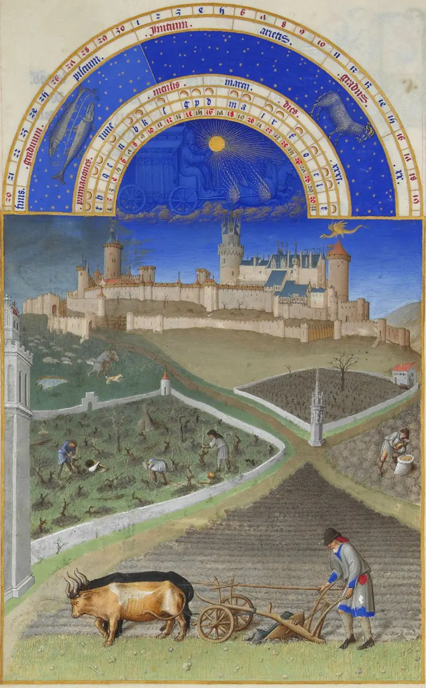
Bölüm I
Temel ve Surlar
Harmony, ButterLib, MCM gibi altyapı modları, kendi iki modumuz, çökmeleri önleyen ve haritadaki takılmayı azaltan yamalar. Öteki bütün modlar bunların üzerine kurulur.
13 mod. Okumak istediğine dokun.
Bu kitap bir Bannerlord mod paketini anlatır. Savaşı, sarayı, denizi ve çarşıyı genişleten modlar birlikte çalışacak biçimde bir araya getirildi; aralarını iki kendi modumuz tutuyor. Her modun ne yaptığını, hangi tuşla açıldığını ve nasıl ayarlandığını burada bulursun.
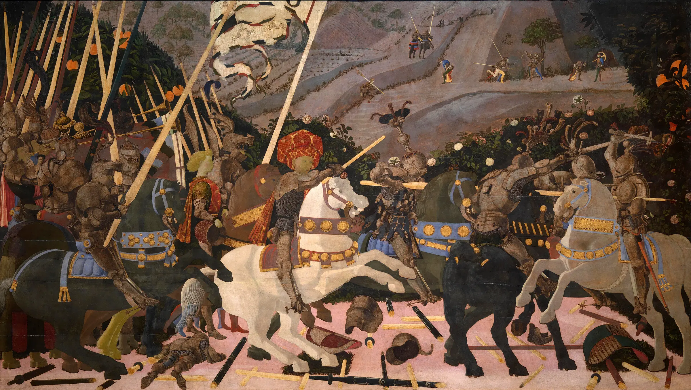
Kuşbakışı kamera ve emir sıraları, kıskaca alan süvari, kargı duvarı, sektiren zırh, savaş boruları, gece meşaleleri ve yaşayan hava durumu.
Savaş yorgunluğu, ittifaklar, iç savaşlar, unvanlar, divan kurmak, inançlar ve daha akıllı krallıklar.
İstediğinle evlenmek, çocuk yetiştirmek, eğitim, entrika, düello ve klanların kaderini belirleyen evlilik kararları.
Kendi asker ağacın, kişisel maiyetin, muhafızların ve adı olan askerlerin.
Boş araziye köy, kale, kent kurmak; kalelere pazar, köylere malikâne, kentlere büyüyen atölyeler.
Suikast, soygun, kaçakçılık, yeni haydut çeteleri ve gezgin yoldaşlar.
War Sails için kargo ambarı, hızlı gemiler, serbest gemi geliştirme ve dengeli fiyatlar.
Yüzlerce yeni silah, kalkan, zırh ve koşum; saçlar, armalar, sancak düzenleyici ve rastgele üretilen silahlar.
Modların eksik metinleri ve koda gömülü İngilizceleri Türkçe; haritayı hafifleten ve çökmeleri yakalayan modlar.
Tek dosya iner. Kurulum programı modları, ayarları ve yükleme sırasını kendisi yerleştirir; kaldırınca oyunu eski hâline döndürür.
Paket arkadaşlara özel. İndirme düğmesi, sana gönderilen linkle açınca çıkar.
UltimatePack-1.0.0-rc1.zip, 6,04 GBf076493ddbc5d308417bee2e9ec8c252ae6cfd0e15781ceeb0641e2958e5148bkurulum.exe'ye çift tıkla, Enter'a bas. Windows uyarırsa: Ek bilgi, sonra Yine de çalıştır.OYNA.bat'a çift tıkla../kurulum çalıştır, Enter'a bas. Çalışmazsa önce chmod +x kurulum.Bu modlarla açılmaz. Kurulum kayıtlara dokunmaz.
Uçbirimde kurulum onar; kaldırmak için kurulum kaldir. Bu yüzden klasörü silme.
Kurulum Linux'ta ve Wine'da denendi, gerçek Windows'ta henüz denenmedi.
Pakette yetişkin içerikli modlar var, dizinde Yetişkin etiketiyle duruyorlar. 18 yaşından küçüksen kurma.
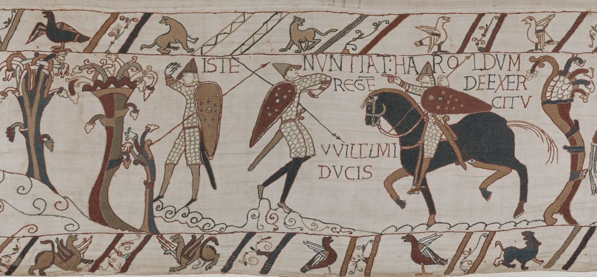
Modları oyunda dokundukları yere göre dokuz bölüme ayırdık. Her bölümün başında o konuyu anlatan gerçek bir ortaçağ minyatürü var; listedeki numara modun folyo numarasıdır.

Bölüm I
Harmony, ButterLib, MCM gibi altyapı modları, kendi iki modumuz, çökmeleri önleyen ve haritadaki takılmayı azaltan yamalar. Öteki bütün modlar bunların üzerine kurulur.
13 mod. Okumak istediğine dokun.
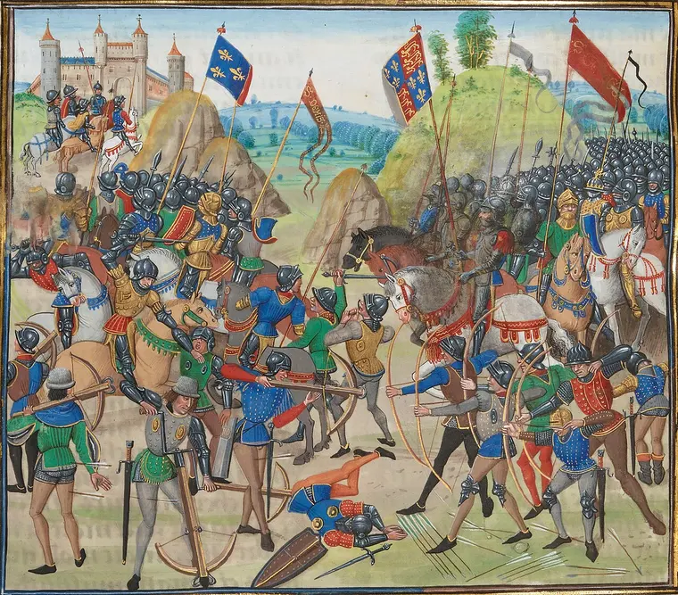
Bölüm II
RTS kamerası, süvari ve atlı okçu taktikleri, kargı duvarı, kuşatma yapay zekâsı; savaş boruları, kan ve yere serilen bedenler.
29 mod. Okumak istediğine dokun.
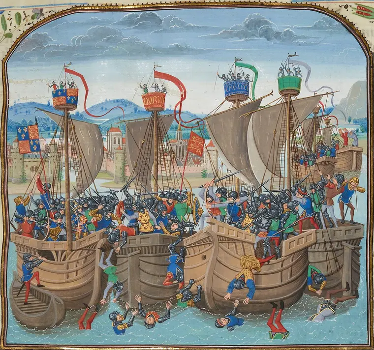
Bölüm III
War Sails için kargo ambarları, daha hızlı gemiler, serbest gemi geliştirmeleri, deniz dengesi ve deniz savaşı çökme koruması.
5 mod. Okumak istediğine dokun.
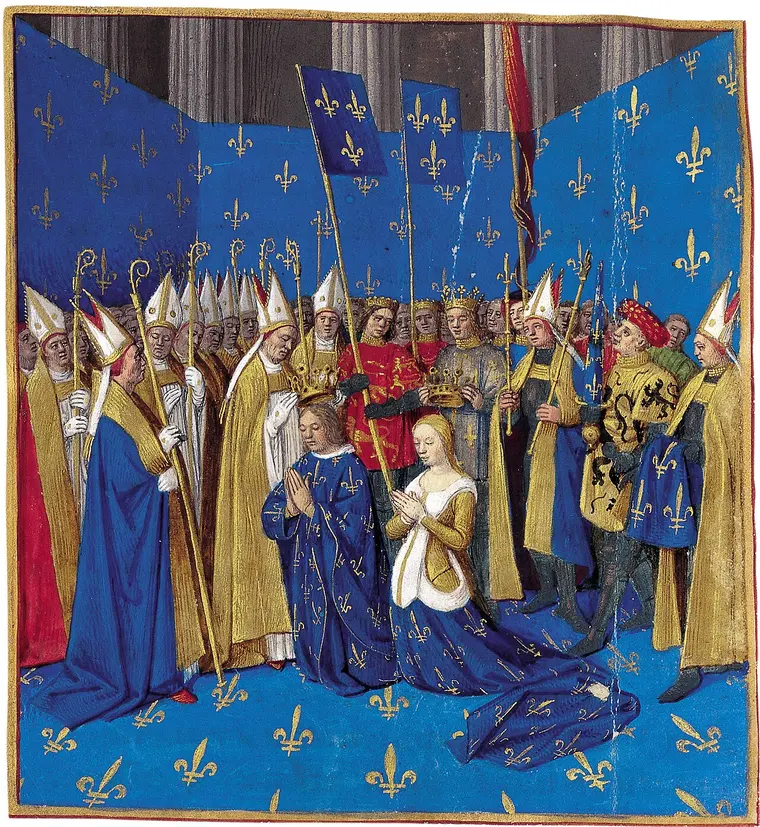
Bölüm IV
Diplomasi, unvanlar, divan, inançlar, yapay zekâ krallıklarının savaş aklı, kendi yerleşimini kurmak ve tahta geçmek.
15 mod. Okumak istediğine dokun.
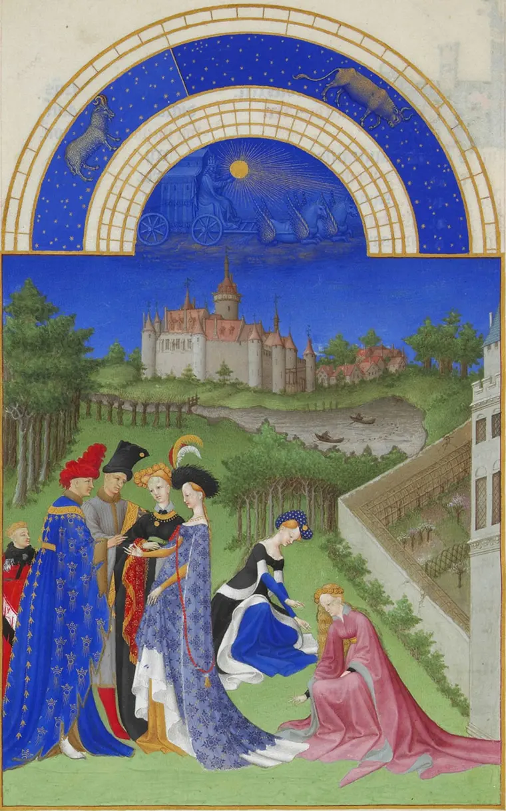
Bölüm V
Evlilik, çocukların büyümesi ve eğitimi, öyküsü olan yoldaşlar, onların kendi kararları ve saraydaki gündelik hayat.
19 mod. Okumak istediğine dokun.
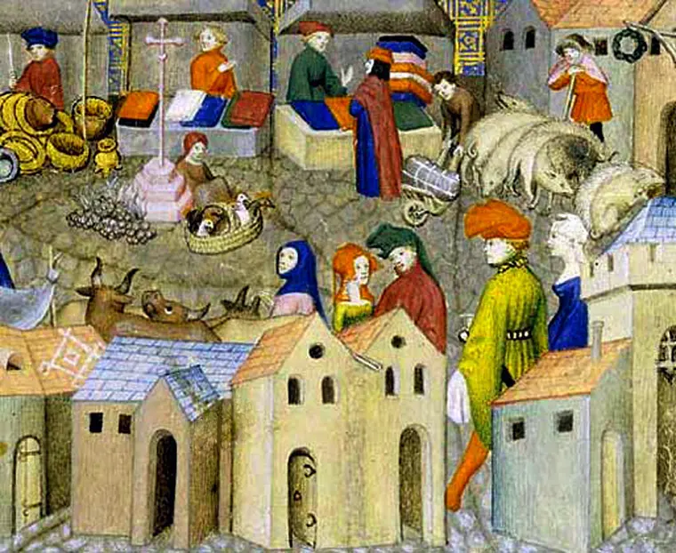
Bölüm VI
Tarım malikâneleri, kale pazarları, yükseltilebilen atölyeler, kaçakçılık ve haydut çeteleri.
9 mod. Okumak istediğine dokun.
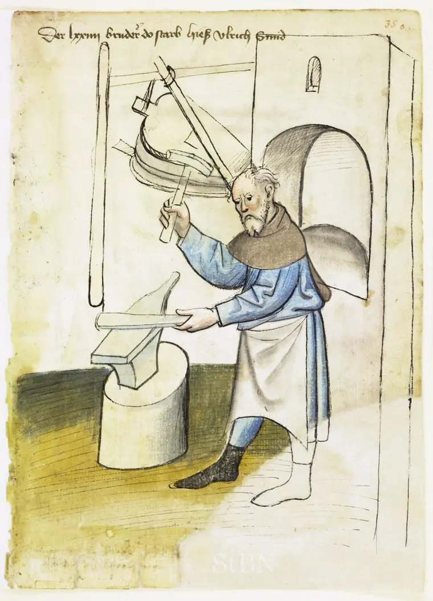
Bölüm VII
Zırh, kalkan ve yay dövmek, kendi askerini ve maiyetini tasarlamak, yüzlerce yeni silah, kalkan, zırh ve koşum.
14 mod. Okumak istediğine dokun.
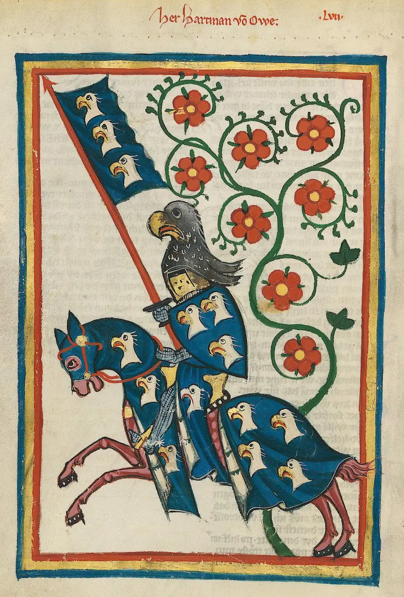
Bölüm VIII
Armalar ve sancak düzenleyici, saçlar ve yüzler, kılıflar, haritanın gece ışıkları, kayan yıldızlar ve eşya kalitesine göre renkler.
20 mod. Okumak istediğine dokun.
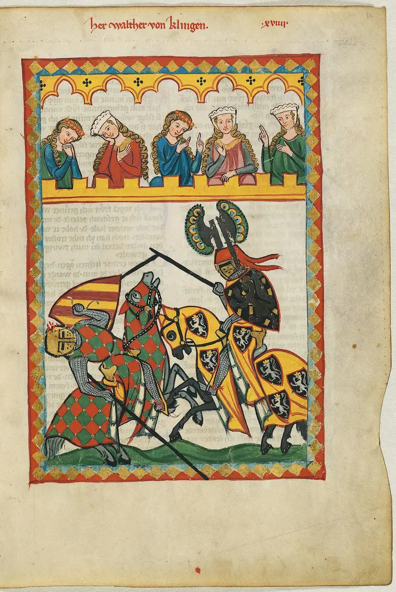
Bölüm IX
Turnuva ödülleri, başarımlar, seviye ve getiri ayarları, uzaktaki yoldaşı yönetmek, tarihli hızlı kayıt ve orduyu sıralamak.
13 mod. Okumak istediğine dokun.
Pakette iki mod bize ait. Ultimate Pack Fixes modların birlikte çökmeden çalışmasını sağlar; Ultimate Pack Core aşağıdaki özellikleri oyuna katar. Çoğu MCM menüsünden ayarlanır.
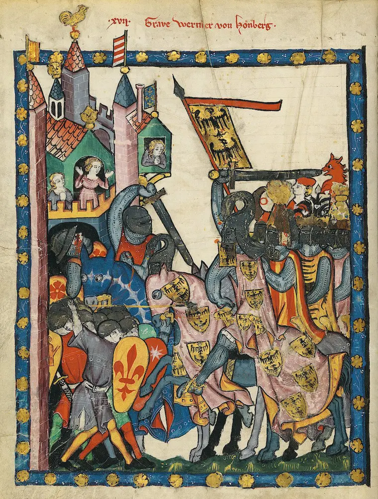
Haritaya dönünce önce ayrı bir kayıt alınır, sonra iki aşamalı bir pencere açılır: klanlara ne olacak, krallık ve taht kimin olacak. Yalnız senin durumuna uyan seçenekler görünür.
Seçtiğin sonucun klanlara, topraklara ve tahtlara etkisini karar vermeden gösterir.
Bir krallığın tahtına geçince krallık senin sancağını ve renklerini taşır; tahttan inince kendi sancağına döner.
Evlenince eşin senin birliğine katılır.
Eşinle ya da seni seven yetişkin biriyle konuşurken geceyi birlikte geçirmeyi önerebilir, çocuk sahibi olabilirsin; oyuncu da hamile kalabilir. Karşındaki reddedebilir. 18 yaşından küçükler, kan bağı olanlar, tutsaklar ve düşmanlar her koşulda dışarıdadır.
Köylü, kasabalı ya da gezginle tanışıp onu kalıcı bir kişiye dönüştürebilirsin.
Yetişkin olan her yaşta çocuğun olabilir. MCM'den kapatılabilir.
Aile üyelerinin yanında sana yakınlığı yazar: eşin, eşinin annesi, kuzeninin oğlu.
Yanıtı kalmayan bir konuşma ana seçeneklere döner ya da kapanır.
Kentte ve köyde peşinden asker kalabalığı gelmez.
53 modun dil dosyasında eksik kalan 4.019 metin Türkçe.
Dil dosyası olmayan modların koda yazılmış 7.425 metni ekranda Türkçe görünür. MCM'den kapatılabilir.
Modların birlikte çalışırken çıkardığı bilinen hatalar yakalanır, sefer sürer.
Hataları, donmaları ve nedenlerini oyuna dokunmadan kaydeder; bir sorun bildirirken işe yarar.
İki karar verirsin: önce klanlar, sonra krallık ve taht. Oyunda bunlardan yalnız senin durumuna uyanlar görünür.
Ultimate Pack Core'un içindeki 15 özellik daha. Anlatımını okumak için adına dokun.
Paketin getirdiği bilinen kısayollar. Mod adına dokunursan o modun sayfası açılır.
| Tuş | Mod | Ne yapar |
|---|---|---|
| F10 | RTS Camera | Savaşta serbest kameraya geçer ve geri döner. |
| L | RTS Camera | Savaşta RTS Camera ve Command System ayar menüsünü açar. |
| E | RTS Camera | Serbest kamerada seçili formasyonu izler. Karakterin düşünce bir askeri izler, ikinci basışta onu yönetirsin. |
| Shift (basılı) | RTS Camera Command System | Verdiğin emirler sıraya girer, birlikler sırayla uygular. |
| Orta Tık | RTS Camera Command System | Düşmana tıklarsan o formasyona hücum, kendi askerine tıklarsan formasyon seçimi. |
| Alt+Orta Tık | RTS Camera Command System | Hareket emrini bozmadan hedef gösterir. |
| H | RTS Camera Command System | Otomatik yaylım: askerler bekleyip birlikte atar. |
| J | RTS Camera Command System | Elle yaylım: nişan alıp emrini beklerler. |
| K | RTS Camera Command System | Yaylım ateşi emri. |
| F6 | CavalryCycleLogic | Birlikleri yapay zekâya devreder; süvarin kıskaç düzenine girer. |
| Shift+J | Join Any Battle | Haritada en yakın kuşatmaya katılma menüsünü açar. |
| Shift+F | Join Any Battle | Diplomatik serbestliği açar ya da kapatır. |
| Sol Tık (haritaya) | Leave On Click | Kent, kale ve köy menüsünden haritaya çıkar. |
| Shift+R | Retinues | Haritadan asker düzenleyicisini açar (MCM'de varsayılan kapalı). |
| X | Visible Quivers In Melee | Fırlatma silahını yakın dövüşe çevirir; kılıf görünür kalır. |
| Ctrl+C | Banner Color Persistence | Sancak düzenleyicide sancak kodunu kopyalar. |
| Ctrl+V | Banner Color Persistence | Sancak düzenleyicide kopyaladığın kodu yapıştırır. |
| Q | Horses | Islık çalıp atını çağırır. |
| Ctrl+Tık | Better Smithing Continued | Eritmede birden çok parça; arıtma ve dövmede çoklu işlem. |
| Shift+Tık | Better Smithing Continued | Eritmede hepsi; arıtma ve dövmede çoklu işlem. |
| Ctrl+Shift+Tık | Better Smithing Continued | Arıtma ve dövmede yapılabildiği kadar. |
| Ctrl+S | Better Smithing Continued | Tasarladığın silahı şablon olarak kaydeder. |
| Parti Ekranı Butonları | TroopSort | Askerleri sınıf, kademe, kültür ya da yaraya göre sıralar. |
| Shift+Sol Tık | My Little Warband | Kendi klan askerinin düzenleyicisini açar. |
Bütün modlar folyo sırasıyla. Ada, özelliğe ya da tuşa göre ara; bölüme veya niteliğe göre süz.
137 mod listeleniyor.
| f. | Mod | Bölüm | Sürüm | Tuş |
|---|---|---|---|---|
| 1 | HarmonyÖteki modların oyunun davranışını dosyalarına dokunmadan değiştirmesini sağlayan temel kütüphane. Paketteki modların çoğu buna dayanır. | Temel ve Surlar | 2.4.2.248 | |
| 2 | ButterLibModların ortak kullandığı ikinci temel kütüphane: kayıt verisi, günlük ve çökme raporu sağlar. | Temel ve Surlar | 2.12.0 | |
| 3 | UIExtenderExFarklı modların aynı oyun ekranına düğme ve panel eklemesini sağlar; biri ötekini bozmaz. | Temel ve Surlar | 3.0.3 | |
| 4 | Mod Configuration Menu v5Mod ayarlarının oyun içinden yapıldığı menü (MCM). Ana menüde ve Esc menüsünde Mod Seçenekleri olarak görünür. | Temel ve Surlar | 5.13.1 | |
| 5 | Ultimate Pack FixesBu paket için yazılan kararlılık modu. Modlar bir araya gelince çıkan çökmeleri yakalar, haritayı yavaşlatan hesapları hafifletir. | Temel ve Surlar | 1.4.0 | |
| 6 | Crash DoctorOyun çökünce nedenini bulur ve çökmeden hemen önce acil kayıt almayı dener. | Temel ve Surlar | 2.3.0.1 | |
| 7 | Performance OptimizerHaritada uzakta ve görüş dışında kalan birliklerin görsel güncellemesini seyrelterek işlemci ve ekran kartı yükünü azaltır. | Temel ve Surlar | 1.6.0 | F11 |
| 8 | Perk Lag FixKarakter ekranında getiri seçerken ve beceriler arasında gezerken yaşanan takılmayı giderir. | Temel ve Surlar | 1.1.0 | |
| 9 | Banner FixSancak ve armaların savaşta ve haritada bozuk, siyah ya da yırtık görünmesini düzeltir. | Temel ve Surlar | 4.0.0 | |
| 10 | Ultimate Pack CoreBu paket için yazılan oynanış modu: savaş yapay zekâsı, evlilik ve taht kararları, aile seçenekleri, harita kolaylıkları ve Türkçe ekran yazıları tek modda. | Temel ve Surlar | 1.0.0 | |
| 11 | Crash Fix ModHaritada yol alırken kaydı bozulmuş bir kahraman yüzünden çıkan çökmeyi önler. | Temel ve Surlar | 1.2.0 | |
| 12 | Steady TicksOyunun saatlik, günlük ve haftalık hesaplarını karelere yayar; gün dönümünde harita takılmaz. | Temel ve Surlar | 1.0.4 | |
| 13 | Campaign Lag DoctorSefer haritası takıldığında nedenini söyler ve istersen haritadaki gereksiz kalabalığı azaltır. | Temel ve Surlar | 1.0.0 | |
| 14 | RTS CameraSavaşta kuşbakışı serbest kamera. Karakterin düşse bile bir askerinin yerine geçip dövüşmeyi sürdürürsün; zamanı yavaşlatıp hızlandırabilirsin. | Muharebe Meydanı | 5.5.4 | E F10 L |
| 15 | RTS Camera Command SystemSavaşı strateji oyunu gibi yönetirsin: fareyle hedef gösterir, emirleri sıraya dizer, yaylım ateşi açtırırsın. | Muharebe Meydanı | 5.5.4 | |
| 16 | AIKickNBashYapay zekâ askerleri ve lordları da tekme atar, kalkanla vurur. Yakın dövüş daha zor ve hareketli olur. | Muharebe Meydanı | 1.0.9 | |
| 17 | Flanking Horse ArchersYapay zekânın atlı okçularını düşman hattına dalmak yerine sağ kanatta bekletir, süvari saldırınca onlarla birlikte vurdurur. | Muharebe Meydanı | Core | |
| 18 | Cavalry PincerMeydan savaşında süvariyi iki kanattan kıskaca alan, savunmada yedekleri karşı hücuma kaldıran süvari yapay zekâsı. | Muharebe Meydanı | Core | F6 |
| 19 | AutoResolveRebalancedAsker gönderip otomatik çözdüğün savaşlarda kayıpları mantıklı hâle getirir; iki çapulcu son kademe şövalyeni öldürmez. | Muharebe Meydanı | 1.57.0 | |
| 20 | Fight While WoundedYaralıyken de savaşa girip askerinin başında dövüşebilirsin. | Muharebe Meydanı | Core | |
| 21 | Catapults Target TroopsKuşatmada mancınıkların sık piyade ve ağır piyade kümelerini öncelikli hedef almasını sağlar. | Muharebe Meydanı | Core | |
| 22 | Reinforcement SystemTakviyeler savaşın ortasında belirmek yerine harita kenarından, düzenli dalgalar hâlinde ve boru sesiyle gelir. | Muharebe Meydanı | 2.4.8 | |
| 23 | Choose Your TroopsSavaşa girmeden önce sahaya ilk çıkacak askerleri ve yoldaşları tek tek seçersin. | Muharebe Meydanı | 1.9.0 | |
| 24 | ChooseYourTroopsWSChoose Your Troops'un deniz savaşı sürümü: gemilere hangi askerlerin bineceğini seçersin. | Muharebe Meydanı | 1.1.0 | |
| 25 | HealingOnKillBasedOnMedicineSkillKahramanlar savaşta düşman devirdikçe Tıp becerisi oranında can kazanır. Tıp becerisi savaşta da gelişir. | Muharebe Meydanı | 1.3.0 | |
| 26 | Heavy Armor DeflectionAğır zırh zayıf kesikleri ve hafif okları sektirir. Zırhın malzemesi, vuruş açısı ve silah türü hesaba katılır. | Muharebe Meydanı | 2.1.1 | |
| 27 | Just Give Up Man! (JGUM)Umutsuz kalan garnizonlar, lordlar ve devriyeler ölümüne savaşmak yerine teslim olabilir, pazarlık edebilir ya da kaleyi devredebilir. | Muharebe Meydanı | 2.4.3.46 | |
| 28 | Join Any BattleTarafı olmadığın bir meydan savaşına ya da kuşatmaya istediğin safta katılmanı sağlar. | Muharebe Meydanı | Core | Shift + F Shift + J |
| 29 | KnockedDownHeroesInfluencesTroopsBir lord ya da kaptan düştüğünde askerlerinin morali sarsılır; etkisi saflara yayılır. | Muharebe Meydanı | 1.3.0 | |
| 30 | Mettle (Varied Troop Quality)Aynı tür askerler birbirinin kopyası olmaz: acemi, kıdemli ve seçkin olarak ayrılır, savaştıkça gelişirler. | Muharebe Meydanı | 2.2.2 | |
| 31 | Pike WallYere dayanan kargılar, üstüne gelen süvarinin atını şaha kaldırır ve binicisini düşürür. | Muharebe Meydanı | Core | |
| 32 | Overhead ShieldwallKalkan duvarındaki askerler kalkanlarını başlarının üstüne kaldırıp oklara karşı kaplumbağa düzeni kurar. | Muharebe Meydanı | 1.3.0 | |
| 33 | Realistic Combat AdjustmentsSaplamaları güçlendirir: kalkansız savunmayı ezer, mızrak ve ciritler kalkanı delebilir. | Muharebe Meydanı | Core | |
| 34 | RealisticCombatSoundsSavaş seslerini yeniler: metalin metale, ahşabın kalkana, gürzün zırha vuruşu ayrı ayrı duyulur. | Muharebe Meydanı | 3.9.10 | |
| 35 | RealisticWeatherYağmur, kar, sis ve kum fırtınası yalnız görüntü değildir; görüşü, okçuluğu ve hareketi etkiler. | Muharebe Meydanı | 1.4.9 | |
| 36 | SiegeAIFixKuşatmada askerlerin merdiven önünde donması, koçbaşını bırakması ya da kırık kapıdan girmemesi gibi davranışları düzeltir. | Muharebe Meydanı | 1.9.4 | |
| 37 | gfrontsMoreBattleShoutsEmir verdiğinde askerler seslenerek karşılık verir, savaş sırasında nara atar. | Muharebe Meydanı | 1.0.6 | |
| 38 | XorberaxLegacyXorberax'ın sevilen modları tek pakette: ölümcül at hücumu, birden çok düşmanı biçme, kanama, bankacılık ve bilginler. | Muharebe Meydanı | 1.0.8.8 | |
| 39 | Immersive BattlefieldsSavaşta emirleri sese ve boruya döker: komutanlar emri yüksek sesle tekrarlar, hücumda savaş borusu öter. | Muharebe Meydanı | 3.7.0 | |
| 40 | Dismemberment PlusÖldüren ya da bayıltan darbelerde baş, kol, el, bacak ve ayak kopması ekler. | Muharebe Meydanı | 2.0.8.8 | |
| 41 | Ragdoll BattlefieldsSavaş alanındaki cesetlere fizik verir: atlar ve askerler üstünden geçince bedenler itilir. | Muharebe Meydanı | 1.0.1 | |
| 42 | Blood ModSavaş, kent ve arena sahnelerindeki kan izlerini yeniler. | Muharebe Meydanı | 2.8.0 | |
| 43 | CargoHoldsGemilere ayrı kargo ambarı ekler. Yükün orduyu yavaşlatmaz, limanlar arası ticaret kolaylaşır. | Denizler ve Filolar | 1.0.2 | |
| 44 | NavalDLCBalanceFixWar Sails'ta gemi alım satımı, tamiri ve geliştirme fiyatlarını dengeler. | Denizler ve Filolar | 1.0.0 | |
| 45 | Naval Morale Crash GuardDeniz savaşında bir asker düştüğünde moral hesabının oyunu çökertmesini engeller. | Denizler ve Filolar | Core | |
| 46 | Faster ShipsHaritadaki gemileri hızlandırır; deniz yolculuğu kara ordusunun gerisinde kalmaz. | Denizler ve Filolar | 1.0.0 | |
| 47 | Unlock Ship UpgradeWar Sails gemi geliştirmelerinde kültür ve liman kademesi şartlarını esnetir. | Denizler ve Filolar | Core | |
| 48 | Bannerlord.DiplomacyDiplomasiyi derinleştirir: savaş yorgunluğu, saldırmazlık paktı, ittifak, iç savaş, ulaklar ve ayrıntılı krallık ekranı. | Taht ve Divan | 1.5.7 | |
| 49 | BecomeKingBir krallıkta vasalken hükümdarın ölümünü beklemeden tacı almanın yolunu açar. | Taht ve Divan | 1.0.0 | |
| 50 | CulturalIntegrationFethettiğin kent ve kaleler zamanla senin kültürüne geçer. Süre ve asker dönüşümü ayarlanabilir. | Taht ve Divan | 1.2.5 | |
| 51 | CultureCreatorKendi kültürünü oyun içinde tasarlarsın: askerler, klanlar, lordlar, donanım, hatta haritaya yeni kent ve kaleler. | Taht ve Divan | 0.15.0 | |
| 52 | EnlistmentKlanını yönetmek yerine bir lordun ordusuna er olarak yazılır, rütbe rütbe yükselirsin. | Taht ve Divan | 1.8.0 | |
| 53 | GovernorsHandleIssuesAtadığın valiler, yerleşkenin ve bağlı köylerin sorunlarını kendi çözer; köy köy görev peşinde koşmazsın. | Taht ve Divan | 1.1.0.5 | |
| 54 | HoldCourtKale ve kentlerinin taht odasında divan kurar, tebaanı dinler, davaları karara bağlarsın. | Taht ve Divan | 1.5.1 | |
| 55 | KeepOwnFiefKendi ordunla aldığın kale ve kenti, krallık oylamasına düşmeden elinde tutabilirsin. | Taht ve Divan | 0.3.0 | |
| 56 | NobleHouseholdLordlar, eşleri ve çocukları kale ve kentlerde gerçek bir ev halkı gibi yaşar. | Taht ve Divan | 0.4.0 | |
| 57 | PlayerSettlementBoş araziye kamp kurar, onu köye, kaleye ve kente büyütürsün. | Taht ve Divan | 7.5.1 | |
| 58 | TitlesLordlara ve sana topraklarına göre unvan verir: baron, kont, dük, emir, knyaz ve benzerleri. | Taht ve Divan | 1.0.7 | |
| 59 | TownCeremoniesFetih, taç giyme, zafer ve düğünlerde kent sokaklarında geçit törenleri ve kutlamalar düzenlenir. | Taht ve Divan | 3.0.0 | |
| 60 | TrueRelationsYan yana savaşmak, esirlere davranışın ve yardımların, lordlarla ilişkini gerçekten etkiler. | Taht ve Divan | 2.1.0 | |
| 61 | Strategic Campaign AIYapay zekâ krallıkları savaş hedefini daha akıllı seçer: umutsuz kuşatmayı bırakır, yorulunca barış arar. | Taht ve Divan | 0.3.3 | |
| 62 | Faiths of CalradiaKalradya'ya inançlar getirir. Her kültürün bir inancı, sapkın kolları, rahipleri, kutsal yerleri ve emanetleri vardır; inançlar yerleşkelerde gün gün yayılır ve siyaseti etkiler. | Taht ve Divan | 1.0.26 | |
| 63 | Marry AnyoneSoylu, yoldaş, hükümdar ya da köylü; cinsiyet ve krallık sınırı olmadan istediğin yetişkinle evlenebilirsin. Çok eşlilik ayarlanabilir. | Hanedan ve Saray | 3.1.0 | |
| 64 | Affairs of Calradia (Friends With Benefits)Flört, yasak aşk, gayrimeşru çocuk, kıskançlık, düello ve dedikodu: saray hayatına entrika katar. Yetişkin içerik taşır. | Hanedan ve Saray | 2.0.743 | |
| 65 | Affairs of Calradia - MCMAffairs of Calradia'nın bütün ayarlarını MCM menüsüne getirir. | Hanedan ve Saray | 1.0.75 | |
| 66 | Hot ButterYetişkinlere yönelik sahneler ekler; bu sahnelerden hamilelik çıkabilir. | Hanedan ve Saray | 2.1.0 | |
| 67 | HotScenesYetişkin sahnelerinin animasyon, kamera ve dekor altyapısı. Öteki modlar bunu kullanır. | Hanedan ve Saray | 1.0.7 | |
| 68 | Child Adoption ModYetim çocukları evlat edinir, klanının meşru çocuğu olarak büyütürsün. | Hanedan ve Saray | 1.2.0 | |
| 69 | ChildrenGrowFasterReduxÇocukların büyümesini ve hamilelik süresini ayarladığın oranda hızlandırır. | Hanedan ve Saray | 1.4.2 | |
| 70 | LT_EducationKitap okuyup bilginlerden ders alarak odak ve nitelik puanı kazanılan bir eğitim sistemi. | Hanedan ve Saray | 1.11.4 | |
| 71 | Alive ScenesKent, köy ve hanlarda insanlar birbiriyle konuşur, sesler ve kalabalık artar. | Hanedan ve Saray | 1.2.2 | |
| 72 | Bodyguards ReloadedKendine koruma birliği kurarsın; savaşta çevrende kalır, yaklaşan düşmanı karşılarlar. | Hanedan ve Saray | 1.2.13 | |
| 73 | Companion AutonomyYoldaşlarının yönettiği birlikler kendi askerini toplar, erzağını alır, eksiğini tamamlar. | Hanedan ve Saray | 1.2.1 | |
| 74 | Heroes EvolveLordlar da zamanla gelişir: savaştıkça beceri ve getiri kazanırlar. | Hanedan ve Saray | 1.7.0 | |
| 75 | More Prisoner InteractionsEsirlerle konuşma seçeneklerini artırır: sorgulama, yemin ettirme, taviz koparma, ava çıkarma. | Hanedan ve Saray | 1.3.0 | |
| 76 | Prisoner Troop ConstructionZindandaki tutsaklar, kentte duran askerlerin ve ordunun mühendisliği inşaata güç katar. | Hanedan ve Saray | Core | |
| 77 | Start As AnyoneSıfırdan başlamak yerine haritadaki bir kral, lord, leydi ya da yoldaş olarak oynarsın. | Hanedan ve Saray | 1.0.4.0 | |
| 78 | Tavernmaids ServiceHan çalışanları masalara servis yapar, seninle konuşur; hanlar daha canlı olur. Yetişkin içerik taşır. | Hanedan ve Saray | 1.0.7 | |
| 79 | Traits of CalradiaKarakterlere yüzlerce yeni mizaç, erdem, kusur ve meslek özelliği ekler. | Hanedan ve Saray | 0.5.2 | |
| 80 | Walkers of CalradiaKent sokaklarını her kültürün kendi halkıyla, çalgıcılar ve gezginlerle doldurur. | Hanedan ve Saray | 0.0.1 | |
| 81 | Women in CalradiaKendi geçmişi, konuşmaları ve görünüşü olan el yapımı gezginler ekler; hanlarda bulup yoldaş yaparsın. | Hanedan ve Saray | 10.7.9.1 | |
| 82 | AgricultureEstateKöylerden arazi alır, tarla ve malikâne işletir, tutsakları tarlada çalıştırırsın. | Çarşı ve Yol Kesenler | 1.4.7.2 | |
| 83 | Castle Market TownsKalelere pazar, han, tüccar ve paralı asker ekler; kale küçük bir kasabaya döner. | Çarşı ve Yol Kesenler | 1.4.0 | |
| 84 | FourberieSuç dünyası: suikast, soygun, kaçakçılık, çete yönetimi ve sığınak ağı. | Çarşı ve Yol Kesenler | 1.5.7.0 | |
| 85 | Upgradeable WorkshopsAtölyeleri üç seviyeye kadar yükseltir; üretim ve kazanç artar. | Çarşı ve Yol Kesenler | 1.0.0 | |
| 86 | True Controller"True" adlı modların ortak ayar merkezi. | Çarşı ve Yol Kesenler | 2.0.7 | |
| 87 | Brigand BandsHer kültüre özgü yeni haydut çeteleri, liderli savaş grupları ve akıncılar ekler. | Çarşı ve Yol Kesenler | 1.5.1.0 | |
| 88 | Wanderers In PartiesGezginler hanlarda beklemez: lordların birliklerine katılır, sokakta gezer, rol üstlenir. | Çarşı ve Yol Kesenler | 1.5.7.0 | |
| 89 | Bandit Black HoleHaydutla konuşurken "herkesi getir" diyerek yakındaki bütün haydut gruplarını tek savaşa çekersin. | Çarşı ve Yol Kesenler | 1.1.2 | |
| 90 | Kill Bandits Raise RelationsHaydut temizledikçe çevredeki köy ve kentlerin ileri gelenleriyle ilişkin artar. | Çarşı ve Yol Kesenler | 4.0.1 | |
| 91 | SpBetterBowsYayların modellerini, kılıflarını, sırtta duruşunu ve seslerini yeniler. | Demirhane ve Ordu | 2.2.2 | |
| 92 | Give Horse Back On UpgradeAtlı bir askeri savaş atıyla terfi ettirince eski atı envanterine geri koyar. | Demirhane ve Ordu | Core | |
| 93 | My Little Warband - Gwyn Edition 3 [BETA]Klanın ya da krallığın için kendi asker ağacını sıfırdan kurarsın: ad, donanım, beceri ve terfi yolları. | Demirhane ve Ordu | 3.8.21 | Shift + Sol Tık |
| 94 | ForgeMaster - Smithing Expanded. Armor. Shields. Bows.Demircide yalnız silah değil zırh, kalkan, yay ve arbalet de döver, eritirsin. | Demirhane ve Ordu | 1.8.1 | |
| 95 | Better Smithing ContinuedDemircilikte toplu eritme, arıtma ve dövme; silah tasarımı kaydetme ve dayanıklılık yönetimi. | Demirhane ve Ordu | 1.4.5.0 | Ctrl + Shift + Sol Tık Ctrl + Sol Tık Shift + Sol Tık |
| 96 | ProceduralWeaponCampaignPazarlara, turnuvalara ve ganimete rastgele üretilmiş yüzlerce özgün silah ekler. | Demirhane ve Ordu | 1.1.0 | |
| 97 | ZweihanderLandsknecht çift elli kılıçları ve onlara özgü dövme parçaları. | Demirhane ve Ordu | 1.2.11 | |
| 98 | HorsesYeni at ırkları ve desenleri, ahır ekranı ve atını ıslıkla çağırma. | Demirhane ve Ordu | 1.0.7 | Q |
| 99 | Weapon Overhaul CompatibilityProceduralWeaponCampaign'in ürettiği silahların oyunu açılışta çökertmesini önler. | Demirhane ve Ordu | Core | |
| 100 | RetinuesKlanının ve krallığının askerlerini klan ekranındaki Askerler sekmesinden baştan tasarlar, kişisel bir maiyet kurarsın. | Demirhane ve Ordu | 1.5.14.35 | Shift + R |
| 101 | Adonnay's Exotic WeaponryChael Nad'ra adlı yabancı bir halkın kılıç, bıçak ve mızraklı palalarını ekler. | Demirhane ve Ordu | 2.3.6 | |
| 102 | ETR ArmoryKuzey, Rus ve bozkır ağırlıklı yeni zırhlar ve miğferler. | Demirhane ve Ordu | 1.0.6.2 | |
| 103 | Open Source WeaponryOpen Source Armory topluluğunun silah ve kalkanlarını ekler; kültürlerin silahı tarihe yakın biçimlere kavuşur. | Demirhane ve Ordu | 2.1.0 | |
| 104 | Open Source SaddleryAt ve deve için 110 yeni koşum ve zırh ekler. | Demirhane ve Ordu | 2.1.0 | |
| 105 | Better Native ArmorsOyunun zırhlarını daha ayrıntılı gösterir; üzerine pelerin, tabard ve brigandin katar. | Sancak ve Suret | 1.1.1 | |
| 106 | BetterPartyTooltipHaritada bir birliğin üstüne gelince asker, erzak, hız ve gemi bilgisi ayrıntılı görünür. | Sancak ve Suret | 1.4.6 | |
| 107 | CC's BannersSancak düzenleyicisine yüzlerce arma, hayvan, dinî simge ve desen ekler. | Sancak ve Suret | 3.5.2 | |
| 108 | Historical Banner IconsAvrupa, Bizans, Haçlı, Selçuklu ve Doğu hanedanlarının gerçek armalarını ekler. | Sancak ve Suret | 1.2.8 | |
| 109 | Helmet Hair Cover Continued PlusMiğfer takınca saçın tümüyle kaybolmasını önler; açıkta kalan yerden saç görünür. | Sancak ve Suret | 3.1.0 | |
| 110 | ItemQualityVisualsEşyaları kalitesine göre renkli çerçeveyle gösterir: kötüden efsaneviye. | Sancak ve Suret | 1.1.5 | |
| 111 | Raise your BannerSavaşta birliklere klan sancağı ve flama taşıyan sancaktarlar verir. | Sancak ve Suret | 17.0.9 | |
| 112 | Raise your TorchGece savaşlarında askerler meşale yakar, alan aydınlanır. | Sancak ve Suret | 7.3.7 | |
| 113 | Weapon LOD FixDövülen silahların uzaktan bakınca kaybolmasını ya da bozulmasını önler. | Sancak ve Suret | Core | |
| 114 | Practical HolstersKullanmadığın mızrak, balta ve ciritlerin taşındığı yeri elindeki silaha göre değiştirir. | Sancak ve Suret | 1.4.0 | |
| 115 | Visible Quivers In MeleeCirit, fırlatma baltası ya da bıçağını X ile yakın dövüşe çevirince sırtındaki kılıfın kaybolmasını önler. | Sancak ve Suret | 1.0.0 | X |
| 116 | Mixed Gear Visual FixKarışık zırh giydiren modlarda görünmez kalan parçaları önleyen uyum modu. | Sancak ve Suret | 2.3.1 | |
| 117 | Horsepple HairBaşlık gibi takılan 196 saç ekler: at kuyruğundan örgüye, her biçimin birkaç rengi vardır. | Sancak ve Suret | 1.5.2 | |
| 118 | Horsepple DiversityKarakter yaratmaya ikinci bir insan soyu ekler; yüz, saç, sakal ve dövme çeşidi çoğalır. | Sancak ve Suret | 1.5.2 | |
| 119 | Xingyu's Hairstyle ExpansionKarakter düzenleyicisine 46 yeni saç modeli ekler. | Sancak ve Suret | 1.0.0 | |
| 120 | Banner Color PersistenceSancağının ve giysilerinin rengini korur; bir krallığa katılınca ya da kayıt yüklenince renkler bozulmaz. | Sancak ve Suret | 1.5.1.1 | Ctrl + C Ctrl + V |
| 121 | Banner EditorSancak düzenleyicisini katmanlı bir çizim masasına çevirir. | Sancak ve Suret | 1.1.1.0 | |
| 122 | IlluminaSefer haritasında gece kentleri, kaleleri, köyleri ve birlikleri ışıklandırır. | Sancak ve Suret | 1.0.1 | |
| 123 | Flora TweaksSavaş alanındaki bitki örtüsünün görüş mesafesini ve yoğunluğunu ayarlar. | Sancak ve Suret | 1.1.0 | |
| 124 | Shooting StarsGece göğüne kayan yıldızlar, ateş topları ve meteor yağmurları ekler; savaşta bunlar alamet sayılır. | Sancak ve Suret | 1.0.0 | |
| 125 | Troop SortingParti, garnizon, tutsak, envanter ve vali ekranlarında askerleri ve karakterleri tek tuşla sıralar. | Turnuva ve Kolaylıklar | 1.5.7.0 | |
| 126 | MBFastDialogueHaritada karşılaşınca konuşma sahnesi yüklenmeden hızlı bir menü açar. | Turnuva ve Kolaylıklar | 4.1.0 | X |
| 127 | Bannerlord PlusOnlarca kolaylık bir arada: ulak göndermek, kişisel muhafız birliği, silah bileme, otomatik yerleşke yönetimi, beşinci donanım yuvası. | Turnuva ve Kolaylıklar | 0.0.8.0 | |
| 128 | BetterTournamentRewardsTurnuvaların ödülünü, bahis sınırını, tecrübesini ve getirdiği namı artırır. | Turnuva ve Kolaylıklar | 1.5.0 | |
| 129 | Butter AchievementsModlu hikâye ve serbest oyun seferlerinde Steam başarımlarının işlemesini sağlar. | Turnuva ve Kolaylıklar | Core | |
| 130 | Leave On ClickKent, kale ve köy menüsündeyken haritada geçerli bir yere sol tıklayınca yerleşkeden çıkarsın. | Turnuva ve Kolaylıklar | Core | |
| 131 | Remove Fog of WarAnsiklopedide bütün lordların, klanların ve mülklerin bilgisini açık gösterir. | Turnuva ve Kolaylıklar | 1.2.2.10 | |
| 132 | TroopsHaveNamesSıradan askerlere kültürüne uygun ad ve lakap verir. | Turnuva ve Kolaylıklar | 1.0.2 | |
| 133 | Perk Fixes and RebalanceOyunda çalışmayan ya da açıklamasından farklı işleyen getirileri onarır ve dengeler. | Turnuva ve Kolaylıklar | 1.0.5 | |
| 134 | Custom XP and LevelingTecrübe, seviye ve klan gelişimini üç MCM menüsünden ayarlarsın. Sen bir şey seçene kadar oyun normal hızında sürer. | Turnuva ve Kolaylıklar | 0.6.5 | |
| 135 | Take Both PerksBeceri ağacında bir getiri seçtiğinde eşini de verir; ikisi arasında seçim yapmak zorunda kalmazsın. | Turnuva ve Kolaylıklar | 1.4.1 | |
| 136 | Manage Remote Companions FixYanında olmayan yoldaşlarını ve yetişkin aile üyelerini uzaktan yönetmeni sağlar. | Turnuva ve Kolaylıklar | 1.0.1 | |
| 137 | Better QuicksaveHızlı kaydı aynı dosyanın üstüne yazmak yerine her seferinde tarihli yeni bir kayda yapar. | Turnuva ve Kolaylıklar | 1.0.0 |
Bu aramayla eşleşen mod yok. Aramayı kısalt ya da süzgeçleri kaldır.
Her modun tam anlatımı, folyo sırasıyla.
Folyo 1, Temel ve Surlar
Öteki modların oyunun davranışını dosyalarına dokunmadan değiştirmesini sağlayan temel kütüphane. Paketteki modların çoğu buna dayanır.
Menüsü ve tuşu yoktur, en önce yüklenir.
Folyo 2, Temel ve Surlar
Modların ortak kullandığı ikinci temel kütüphane: kayıt verisi, günlük ve çökme raporu sağlar.
Oyun çökerse hangi modun neden olduğunu gösteren bir rapor hazırlar.
Modların verisini kayıt dosyasına güvenle ekler.
Folyo 3, Temel ve Surlar
Farklı modların aynı oyun ekranına düğme ve panel eklemesini sağlar; biri ötekini bozmaz.
Parti, klan ve envanter ekranına birkaç mod birden eklenti yapabilir.
Folyo 4, Temel ve Surlar
Mod ayarlarının oyun içinden yapıldığı menü (MCM). Ana menüde ve Esc menüsünde Mod Seçenekleri olarak görünür.
Ayarı olan bütün modlar aynı ekranda listelenir.
Ayarların çoğu oyun sürerken değişir; yeniden başlatma gerekenler ayrıca yazar.
Bazı modlar kolay, gerçekçi gibi hazır ayarlar sunar.
Folyo 5, Temel ve Surlar
Bu paket için yazılan kararlılık modu. Modlar bir araya gelince çıkan çökmeleri yakalar, haritayı yavaşlatan hesapları hafifletir.
Oyunun Proton altında açılışta ve karakter ekranında takılmasını önler.
Sancak yuvasına takılan silahların oyunu çökertmesini engeller.
Titles, Traits of Calradia, Player Settlement ve My Little Warband'ın haritadaki yükünü azaltır.
Çok eşli ve akraba evliliği olan ailelerde soy ağacının oyunu kilitlemesini önler.
Bağımsız klanla ya da paralı askerken mülk ve krallık modlarının hata vermesini engeller.
War Sails'ta savaşa giren gemi sınırını sekize çıkarır.
Folyo 6, Temel ve Surlar
Oyun çökünce nedenini bulur ve çökmeden hemen önce acil kayıt almayı dener.
Çökme anında ilerlemeni kurtarmaya çalışır.
Bilinen hataları çökmeden yakalar, bozuk asker kayıtlarını sefer açılışında temizler.
Hangi modun neden olduğunu yazar.
Folyo 7, Temel ve Surlar
Tuşlar: F11
Haritada uzakta ve görüş dışında kalan birliklerin görsel güncellemesini seyrelterek işlemci ve ekran kartı yükünü azaltır.
Kameradan uzakta kalan birlik modellerinin ve harita ikonlarının render sıklığını kademeli olarak düşürür.
Birliklerin görünürlük ve mesafe hesaplamalarını 4 saniyelik aralıklarla önbelleğe alarak harita presentation motorunu rahatlatır.
Oyun içinde F11 tuşuna basılarak ekranda anlık FPS, kare süresi (frame time) ve modun aktif optimizasyon sayaçlarını gösteren bir gösterge paneli açılıp kapatılabilir.
Birliklerin yapay zeka kararlarına, kervan rotalarına, köy ticaretine veya harita saatlik simülasyonuna kesinlikle dokunmaz; sadece görsel çizim katmanını hafifletir.
Folyo 8, Temel ve Surlar
Karakter ekranında getiri seçerken ve beceriler arasında gezerken yaşanan takılmayı giderir.
Vanilya Bannerlord, karakter ekranında herhangi bir perk seçildiğinde partideki tüm kahramanların tüm yetenek ağaçlarını baştan sona tekrar tarar. PerkLagFix bu unassigned perk kontrolünü yerel olarak önbelleğe alır ve yalnızca o an üzerinde işlem yapılan kahramanın arayüzünü günceller.
Beceriler ve perkler arası geçişler sıfır gecikmeli, akıcı ve anlık hale gelir.
Folyo 9, Temel ve Surlar
Sancak ve armaların savaşta ve haritada bozuk, siyah ya da yırtık görünmesini düzeltir.
Özel klan armalarının ve çok renkli sancakların askerlerin zırhlarına, kalkanlarına ve elde taşınan sancaklara aktarılırken bozulmasını engeller.
Kuşatma ve açık meydan savaşlarında sancak dalgalanma fiziklerini ve gölge hesaplamalarını stabilize eder.
Sancak desenlerini önbelleğe alarak savaş başlangıcındaki kaplama yükleme takılmalarını azaltır.
Folyo 10, Temel ve Surlar
Bu paket için yazılan oynanış modu: savaş yapay zekâsı, evlilik ve taht kararları, aile seçenekleri, harita kolaylıkları ve Türkçe ekran yazıları tek modda.
Süvari kıskacı, kanattan vuran atlı okçular, kargı duvarı, asker kümelerini hedefleyen mancınıklar, kalkan delen saplamalar.
Her savaşa katılma, yaralıyken savaşma, haritaya tıklayıp yerleşkeden çıkma, terfide atı geri alma, tutsaklarla inşaat.
Klan lideriyle evlenince klanların, krallıkların ve tahtın ne olacağına sen karar verirsin.
Konuşmadan geceyi birlikte geçirme, üst yaş sınırı olmadan çocuk, klan ekranında akrabalık.
Öteki modların İngilizce yazılarını Türkçe gösterir.
Hata veren bir özellik yalnız kendini kapatır, oyun sürer.
Folyo 11, Temel ve Surlar
Haritada yol alırken kaydı bozulmuş bir kahraman yüzünden çıkan çökmeyi önler.
Birliğiyle bağı kopan kahramanın kaydını düzeltir, olmazsa o adımı atlar.
Folyo 12, Temel ve Surlar
Oyunun saatlik, günlük ve haftalık hesaplarını karelere yayar; gün dönümünde harita takılmaz.
Kare başına ayrılan süreyi MCM'den sen belirlersin. İş yine aynı oyun içi saatte biter.
Öteki modların günlük işlerini de yayabilir.
Görüşünün çok dışındaki birlikler planını daha seyrek gözden geçirir (varsayılan iki kat). Ordular, kuşatmalar ve yakındaki birlikler yavaşlatılmaz.
Birlik dışındaki kahramanlar her saat yerine dört saatte bir, dört saatlik miktar kadar iyileşir.
Folyo 13, Temel ve Surlar
Sefer haritası takıldığında nedenini söyler ve istersen haritadaki gereksiz kalabalığı azaltır.
Bir kare eşikten uzun sürerse nedenini ekrana yazar: günlük hesap, saatlik hesap, yol bulma, bellek temizliği ya da çizim.
Tarama, ölçülen süreler ve senin anlattıkların birleştirilip ayar önerilir.
Gezen haydutların ve krallıksız klanların birlikleri yüzdeyle azaltılabilir. Yakınındaki birlikler asla silinmez.
Oyun günlüğünü dolduran yinelenen satırları ayıklar.
Folyo 14, Muharebe Meydanı
Tuşlar: E F10 L
Savaşta kuşbakışı serbest kamera. Karakterin düşse bile bir askerinin yerine geçip dövüşmeyi sürdürürsün; zamanı yavaşlatıp hızlandırabilirsin.
Tuşa basıldığında kamera karakterden ayrılarak gökyüzüne yükselir. WASD ile haritada serbestçe gezilebilir, tekerlekle yakınlaştırılıp uzaklaştırılabilir.
Karakterin düştüğünde E ile bir askerini izler, ikinci kez basınca onun kontrolünü alıp dövüşe devam edersin. Serbest kamerada emir ekranı açıkken E seçili formasyonu izletir.
Savaşta modun bütün seçenekleri buradan açılır; tuşlar da buradan değiştirilir.
Savaş sırasında zamanı duraklatma (Pause), ağır çekime alma (Slow Motion) ve hızlı ileri sarma (Fast Forward) fonksiyonları sunar.
Serbest kameranın azami yükselme mesafesi isteğe bağlı olarak oyuncunun Taktik (+metre) ve İzcilik (+yüzde) becerilerine bağlanabilir.
Deniz muharebelerinde serbest kameraya geçildiğinde oyuncunun amiral gemisini askerin dümenine bırakma (Soldier Pilot) veya yapay zekaya devretme (Delegate Command) seçenekleri sunar.
Arazinin eğimini takip etme (Follow Terrain), sınır çizgilerini yok sayma ve emir verirken kamerayı otomatik yükseltme (Elevated Camera).
Folyo 15, Muharebe Meydanı
Savaşı strateji oyunu gibi yönetirsin: fareyle hedef gösterir, emirleri sıraya dizer, yaylım ateşi açtırırsın.
Düşman birliğinin üzerine tıklayarak kendi birliklerinize doğrudan o düşman formasyonuna odaklanma (Focus Attack / Engage specific formation) emri verilebilir.
Shift tuşuna basılı tutarak art arda verilen emirler sıraya dizilir (örneğin: önce tepeye yürü, sonra sola dön, ardından hücum et); birlikler emirleri sırasıyla harfiyen uygular.
Birden fazla formasyon birlikte seçildiğinde, aralarındaki mesafe ve açı korunarak tek hat hâlinde hareket ettirilebilir. Hız senkronizasyon modları: Doğrusal (Linear), Yetişme (Catch Up) veya En Yavaş Birliği Bekleme (Wait for Last Formation).
Menzilli birliklere otomatik (Auto Volley) veya komuta bağlı (Manual Volley Fire) yaylım ateşi emri verilebilir. Askerlerin nişan alıp aynı anda yay germesi ve tek bir ıslıkla yüzlerce oku aynı anda fırlatması sağlanır.
Kalkan duvarı veya kare formasyonundaki birliklerin mevzilerini asla terk etmeden, safları bozmadan kalkan kaldırması sağlanır (isteğe bağlı: darbe alınca karşılık verme).
Ciritçi ve fırlatma baltası taşıyan birliklerin düşmana kılıçla dalmak yerine mesafesini koruyup cephanesini boşaltması sağlanır.
İçi boş kare formasyonu (Hollow Square), köşe askerlerinin çapraz bakış açısı düzeltmesi ve sıkı/gevşek daire formasyonu.
Folyo 16, Muharebe Meydanı
Yapay zekâ askerleri ve lordları da tekme atar, kalkanla vurur. Yakın dövüş daha zor ve hareketli olur.
AI rakipler oyuncu veya düşman askerleri kalkan arkasına saklandığında veya blok tuttuğunda tekmeyle gard düşürür ya da kalkanıyla iterek sersemletir (stagger).
Çift elli silah taşıyan elit savaşçılar silahlarının kabzasıyla düşmanı iterek vuruş mesafesi açar.
Yüksek seviyeli askerler (Tier 4-6) ve lordlar bu teknikleri dövüş anında daha sık ve tam zamanında uygular; düşük seviyeli köylüler ve acemiler nadiren dener.
Tekme ve kalkan darbesi olasılıkları, bekleme süreleri (cooldown) ve hedef kontrol algoritmaları Mod Configuration Menu üzerinden ayarlanabilir.
Folyo 17, Muharebe Meydanı
Yapay zekânın atlı okçularını düşman hattına dalmak yerine sağ kanatta bekletir, süvari saldırınca onlarla birlikte vurdurur.
Savaş başında kısa bir toplanmanın ardından (5 saniye) okçuların 50 metre sağına yerleşirler.
Dost süvari hücum ya da ilerleme emri alınca atlı okçular da kanattan saldırır.
Yapay zekânın ve senin devrettiğin atlı okçular için çalışır.
Folyo 18, Muharebe Meydanı
Tuşlar: F6
Meydan savaşında süvariyi iki kanattan kıskaca alan, savunmada yedekleri karşı hücuma kaldıran süvari yapay zekâsı.
Saldırıda vurucu süvari bir kanada, ciritli süvari öteki kanada açılır (piyadenin 50 metre önü, 100 metre yanı).
Savunmada piyade kayıp verdikçe yedek süvari karşı hücuma geçer.
Yaylı ve arbaletli atlılar bu düzene katılmaz.
Süvarini F6 ile yapay zekâya devredersen bu düzen onu da yönetir.
Folyo 19, Muharebe Meydanı
Asker gönderip otomatik çözdüğün savaşlarda kayıpları mantıklı hâle getirir; iki çapulcu son kademe şövalyeni öldürmez.
Otomatik savaş simülasyonunda zırh değerlerini ve asker tier'larını (Tier 1-6) birincil çarpan yapar; düşük seviyeli çapulcuların ağır zırhlı elit şövalyeleri öldürme şansını gerçekçi bir minimuma çeker.
Ordunun komutanının Taktik (Tactics) becerisi, avantajlı arazi yapısı ve süvari/menzilli oranı simülasyona gerçek ağırlığıyla dahil edilir.
Otomatik savaş öncesinde veya sırasında arayüze eklenen pencere üzerinden tahmini kayıplar, güç oranları ve simülasyon parametreleri detaylıca incelenebilir.
Simülasyonda yaralanma/ölüm oranları, tier çarpanları ve lord korumaları Mod Configuration Menu üzerinden özelleştirilebilir.
Folyo 20, Muharebe Meydanı
Yaralıyken de savaşa girip askerinin başında dövüşebilirsin.
Oyun "yaralısın" deyip saldırıyı kilitlemez.
Sal ve sığ gemi baskınlarındaki 1.5.7 denetimlerine dokunmaz.
Folyo 21, Muharebe Meydanı
Kuşatmada mancınıkların sık piyade ve ağır piyade kümelerini öncelikli hedef almasını sağlar.
Piyade ve ağır piyade formasyonlarının hedef değeri 20 katına çıkar.
Savunan da saldıran da aynı kuralı kullanır.
Folyo 22, Muharebe Meydanı
Takviyeler savaşın ortasında belirmek yerine harita kenarından, düzenli dalgalar hâlinde ve boru sesiyle gelir.
Takviyeler haritanın mantıklı giriş koridorlarından veya kamp yönünden savaş alanına intikal eder.
Takviye dalgası savaşa girdiğinde savaş borusu (Horn sound) çalar, ekranda birliklerin geldiğini haber veren takviye bildirimi (Popup message) belirir ve haydut baskınlarında özel savaş nidaları (Bandit taunt) duyulur.
Kuşatmalarda takviye süvarilerin atlarıyla birlikte mi yoksa yaya olarak mı gireceği yapılandırılabilir.
Savaşa yeni giren düşman takviyelerinin harita kenarında yığılıp kalmasını önleyerek doğrudan muharebe hattına akmasını sağlar.
Folyo 23, Muharebe Meydanı
Savaşa girmeden önce sahaya ilk çıkacak askerleri ve yoldaşları tek tek seçersin.
Savaşa girmeden önce açılan pencerede ordudaki tüm askerler listelenir. Oyuncu dilediği askerlerin yanındaki kutuları işaretleyerek ilk dalgada kimlerin bulunacağını belirler.
Vanilyada savaş alanı sınırına göre ordunun en üstündeki askerler veya karışık birlikler girer; bazen elit süvarileriniz yerine köylüleriniz sahaya iner. Bu mod ile elit muhafızlarınızı veya belirli bir taktiğe uygun okçu/piyade kompozisyonunu elle seçebilirsiniz.
İstediğiniz yoldaşların ilk hatta sizinle birlikte omuz omuza savaşmasını garanti eder.
Folyo 24, Muharebe Meydanı
Choose Your Troops'un deniz savaşı sürümü: gemilere hangi askerlerin bineceğini seçersin.
Gemi savaşları başlamadan önce amiral gemisine ve refakatçi gemilere hangi askerlerin bineceğini belirleme imkanı tanır.
Deniz savaşında avantaj sağlayacak zırhlı kalkanlı birlikleri ve denizci okçuları gemilere öncelikli yerleştirmenizi sağlar.
Folyo 25, Muharebe Meydanı
Kahramanlar savaşta düşman devirdikçe Tıp becerisi oranında can kazanır. Tıp becerisi savaşta da gelişir.
Düşmanı yere sermek (knock down) temel can yenilemesi verirken, düşmanı tamamen öldürmek x2 çarpan uygular. Bir kahramanı (lord/yoldaş) devirmek ise ekstra x2 çarpan kazandırır.
Maksimum iyileşme miktarı ve tıp becerisi tavanı (varsayılan 300) MCM üzerinden yapılandırılır.
Savaştan sonra hayatta kalan ve yaralarını saran tüm kahramanlar iyileşme süreci boyunca pasif olarak Tıp deneyimi kazanır. Düşük seviyeli kahramanların saatte birden fazla seviye atlamasını önlemek için saatlik azami TP limiti bulunur.
Başka bir kahraman devrildiğinde ekranda kurtarılan can miktarı yeşil bildirimle gösterilir.
Folyo 26, Muharebe Meydanı
Ağır zırh zayıf kesikleri ve hafif okları sektirir. Zırhın malzemesi, vuruş açısı ve silah türü hesaba katılır.
Hafif yaylardan atılan oklar plaka zırhtan sekip düşerken, ağır arbalet kurşunları ve yakın mesafeden fırlatılan ciritler zırhı delebilir.
Fırlatma baltaları, ciritler ve ağır topuzlar kalkanlara normalden daha fazla yıpratma hasarı verir. Sırttaki kalkan ile eldeki kalkan teması birbirinden ayırt edilir.
Kafa, gövde, kollar, bacaklar ve ayaklar için ayrı zırh etkileşim profilleri bulunur.
İsteğe bağlı olarak bu sektirme mekaniklerinin yalnızca oyuncuya gelen darbelerde geçerli olması sağlanabilir.
Folyo 27, Muharebe Meydanı
Umutsuz kalan garnizonlar, lordlar ve devriyeler ölümüne savaşmak yerine teslim olabilir, pazarlık edebilir ya da kaleyi devredebilir.
Kuşatılan kale veya şehirde erzak tükendiğinde ve garnizon açlıktan kırılmaya başladığında, kale komutanı beyaz bayraklı bir ulak göndererek teslim olma şartlarını görüşmek üzere müzakere (Parley) talep eder.
Teslimiyeti reddeden veya teslim olma teklifi kabul edilmeyen aç savunucular, açlıktan ölmek yerine sur kapılarını açıp son bir çaresiz yarma taarruzuna kalkışır.
Oyuncu surları yıkılmış ve aç kalmış savunuculara beyaz bayrak altında elçi gönderip kan dökülmeden kaleyi teslim etmeleri için ikna konuşması yapabilir (Onur, Merhamet ve Akılcılık argümanları).
Ticaret (Trade) becerisi yüksek zengin bir düşman lordu kalenizi kuşattığında, garnizona dokunulmaması ve yağma yapılmaması garantisiyle mülkü barışçıl devralmak için yüz binlerce altın teklif edebilir.
5-10 kat güçlü bir orduyla karşılaşan zayıf lordlar, kervanlar veya devriyeler savaşa girmeden silah bırakıp esir düşmeyi kabul eder.
Calculating (Akılcı) ve Mercy (Merhametli) lordlar teslim olmaya daha yatkınken, Valor (Cesur) ve Honor (Onurlu) lordlar teslim olmayı utanç sayıp son nefesine kadar savaşır. Oyuncunun Merhamet ünü teslimiyet şansını doğrudan artırır.
Yapay zeka orduları da kendi arasında teslim olabilir; ancak haritanın bir krallık tarafından anında yutulmasını önlemek için günlük AI kuşatma teslimiyeti sınırı ve bölgesel müttefik kontrol yarıçapı bulunur.
Folyo 28, Muharebe Meydanı
Tuşlar: Shift + F Shift + J
Tarafı olmadığın bir meydan savaşına ya da kuşatmaya istediğin safta katılmanı sağlar.
Karşılaşma menüsünde saldıranlara ya da savunanlara katılma seçeneği çıkar; iki tarafın lideri ve krallığı yazar.
Shift + J en yakın kuşatmaya katılma menüsünü açar. Zaman durmuşken de çalışır.
Shift + F ile açılır. Açıkken başkasının savaşına girmek sana savaş ilan ettirmez, ilişki düşürmez, suç puanı yazmaz.
Karşılaşmadan ayrılma seçeneği ve otomatik savaştan sonra teslim olmanın çökertebileceği uyarısı vardır.
Folyo 29, Muharebe Meydanı
Bir lord ya da kaptan düştüğünde askerlerinin morali sarsılır; etkisi saflara yayılır.
Saf dışı kalan liderin rütbesine göre ordudaki birliklere farklı derecelerde moral cezası veya kazancı uygulanır: - General / Ordu Komutanı: En büyük etkiyi yaratır. Kendi ordusuna yüksek panik ve moral kaybı, düşman ordusuna ise büyük bir zafer morali kazandırır. - Formasyon Kaptanı: Piyade, okçu, süvari veya atlı okçu birliklerinin başındaki kaptan düştüğünde doğrudan o birliğe ağır moral kaybı yaşatır. - Atanmamış Soylu / Yoldaş: Kendi çevresindeki askerlere lokal moral kaybı verir.
Moral değişiminin büyüklüğü darbeyi vuran kişiye göre ölçeklenir (Sıradan bir erin düşman generalini indirmesi, bir generalin generali indirmesinden çok daha büyük moral patlaması yaratır).
Olayın gerçekleştiği noktaya olan mesafe hesaplanır.
Düşman lideri indiğinde yakın müttefik askerler kılıçlarını kaldırıp tezahürat yapar.
Liderlerin düşüşünde özel seslendirmeler çalar. Ekranın üstünde rütbeye göre renkli bildirimler görüntülenir.
Tüm moral düşüş/artış çarpanları, etki yarıçapları, bildirim türleri ve ses efektleri MCM üzerinden tamamen özelleştirilebilir.
Folyo 30, Muharebe Meydanı
Aynı tür askerler birbirinin kopyası olmaz: acemi, kıdemli ve seçkin olarak ayrılır, savaştıkça gelişirler.
Ordudaki birimler çatışmalara girdikçe ve hayatta kaldıkça bireysel kıdem havuzunda terfi eder.
Askerlerin dövüş kabiliyetleri, savurma hızları ve dirençleri küçük varyasyonlarla zenginleştirilir.
Bir birim üst seviyeye terfi ettirildiğinde edindiği tecrübe sıfırlanmaz, yeni rütbesine kıdemli olarak başlar.
Simüle edilen savaşlarda birliklerin kalitesi doğrudan hesaba katılır.
Birlik ekranında (Party Screen) askerlerin kıdem ve rütbe durumları özel fırça ve göstergelerle sunulur.
Folyo 31, Muharebe Meydanı
Yere dayanan kargılar, üstüne gelen süvarinin atını şaha kaldırır ve binicisini düşürür.
Yalnız düşman atı gerçekten kargıya çarptığında işler; kılıç savurması ya da dost atı saymaz.
Folyo 32, Muharebe Meydanı
Kalkan duvarındaki askerler kalkanlarını başlarının üstüne kaldırıp oklara karşı kaplumbağa düzeni kurar.
Askerler kalkan duvarı emri aldığında ön sıra kalkanını öne tutarken, arkadaki sıralar kalkanlarını yukarı kaldırarak birlik üstünü kapatır.
Kale kuşatmalarında surlardan atılan taşlar, kaynar kazanlar, ok ve cirit yağmuruna karşı sur dibine yaklaşan birliklerin kayıp vermeden koçbaşı veya merdivenlere ulaşmasını sağlar.
Folyo 33, Muharebe Meydanı
Saplamaları güçlendirir: kalkansız savunmayı ezer, mızrak ve ciritler kalkanı delebilir.
Kalkanı olmayan birinin silahla karşıladığı saplama savunmayı ezer.
Mızrak, gönderli silah ve cirit saplamaları normal kalkanı deler; büyük kalkanda şans MCM'den ayarlanır (varsayılan yüzde 50).
Folyo 34, Muharebe Meydanı
Savaş seslerini yeniler: metalin metale, ahşabın kalkana, gürzün zırha vuruşu ayrı ayrı duyulur.
Ağır plaka zırha çarpan kılıcın sekme çınlaması, zincir zırha saplanan okun sesi, kasklara inen küt darbeler tamamen gerçeğe uygundur.
Savaş meydanında uzaklarda süren çatışmaların uğultusu ve formasyonların çarpışma yankıları 3D uzamsal ses motoruna entegre edilmiştir.
Folyo 35, Muharebe Meydanı
Yağmur, kar, sis ve kum fırtınası yalnız görüntü değildir; görüşü, okçuluğu ve hareketi etkiler.
War Sails deniz muharebelerinde fırtına, dalgalar, yoğun sis ve yağmur altında gemilerin çarpışma, bordalama ve batma morallerini dinamik olarak yeniden hesaplar.
Yağmur ve sis yoğunlukları harita veya kustom savaş ekranından elle geçersiz kılınabilir, arena müsabakalarında hava durumunun çıkıp çıkmayacağı ayarlanabilir.
RTS Camera serbest uçuş modundayken kameranın önünü kapatan yağmur damlaları veya sis katmanları otomatik gizlenebilir.
Folyo 36, Muharebe Meydanı
Kuşatmada askerlerin merdiven önünde donması, koçbaşını bırakması ya da kırık kapıdan girmemesi gibi davranışları düzeltir.
Askerlerin tek sıra halinde merdiven başında beklemesini engeller; birden fazla merdiveni aynı anda kullanmalarını sağlar.
Kuşatma kulesi mancınıkla yıkıldığında, o kuleye atanmış birliklerin boşlukta takılıp kalmasını önler ve onları anında aktif merdivenlere veya ana kapıya sevk eder.
Koçbaşını iten ekip vurulduğunda arkadan otomatik yedek asker takviyesi yapar. Dış kapı kırıldığında iç kapıya doğru düzenli hücum başlatır.
Kapı kırıldığında savunmacıların ve saldırganların birbirine kenetlenip NavMesh dışına taşmasını engeller.
Merlon ve mazgalların arkasındaki okçuların gelen oklardan korunmak için çömelme pozisyonu almasına olanak tanır.
Folyo 37, Muharebe Meydanı
Emir verdiğinde askerler seslenerek karşılık verir, savaş sırasında nara atar.
Komutanın F1-F3 gibi emir tuşlarına basmasıyla birlikte formasyondaki askerlerin belirlenen yüzdesi senkronize nidalarla ("Emredersiniz!", "Hücum!", "Safları sıklaştırın!") karşılık verir.
Askerler emri onaylarken kılıç ve kalkanlarını havaya kaldırarak görsel tepki verir.
Tüm askerlerin bir robot gibi aynı milisaniyede bağırmasını önlemek için araya rastgele milisaniyelik insani gecikmeler eklenir.
Folyo 38, Muharebe Meydanı
Xorberax'ın sevilen modları tek pakette: ölümcül at hücumu, birden çok düşmanı biçme, kanama, bankacılık ve bilginler.
Süvarilerin yüksek hızda piyadelere çarpması durumunda piyadelerin havaya fırlayıp ezilme hasarı almasını sağlar.
Büyük çift elli kılıç ve baltaların tek bir vuruşta birden fazla düşmana hasar vererek ilerlemesini sağlar. MCM üzerinden sadece oyuncuya açılabilir, dost birimlerin engellemesi ayarlanabilir ve zırh delme eşiği belirlenebilir.
Canı belirli bir yüzdenin altına düşen birimlerde kanama başlar; kanayan birimler yavaşlar ve tıbbi müdahale olmazsa zamanla yere yığılır.
Her büyük şehirde banka hesabı açma imkanı sunar. Oyuncu parasını yatırıp faiz kazanabilir veya kredi çekebilir. Kredi vadesinde ödenmezse banka kiralık katiller ve haydutlar göndererek misilleme yapar.
Şehir hanlarında bulunan alimlere altın ödeyerek klan üyelerine ve yoldaşlara XP eğitimi verdirir.
Folyo 39, Muharebe Meydanı
Savaşta emirleri sese ve boruya döker: komutanlar emri yüksek sesle tekrarlar, hücumda savaş borusu öter.
Formasyon seçince adını, emir verince emri bağırırlar. Her emrin birçok farklı cümlesi vardır.
Kendi ordunda 50 askerde küçük, 250 askerde büyük boru; düşmanda 30 ve 150.
Hücum emrinde askerler bağırır.
Piyadenin başındaki atlı kaptan kendiliğinden atından iner.
Emirler ekranda da görünür; sıklığı varsayılan yüzde 25.
Folyo 40, Muharebe Meydanı
Öldüren ya da bayıltan darbelerde baş, kol, el, bacak ve ayak kopması ekler.
Her uzuv ayrı ayrı kapatılabilir, olasılığı ayrı ayarlanır.
Açılırsa kopma beceriye ve verilen hasara bağlanır.
Kopma anında kamera yavaşlayabilir.
Askerlerin birbirine yaptığı darbeler de sayılır; istersen yalnız senin darbelerine indirirsin.
Folyo 41, Muharebe Meydanı
Savaş alanındaki cesetlere fizik verir: atlar ve askerler üstünden geçince bedenler itilir.
En çok 1500 ceset izlenir; fizik yalnız kameranın 20 metre çevresinde çalışır.
Beden, ölümden 2,7 saniye sonra fiziğe geçer.
Deniz savaşında kapalıdır; mod yazarı da açmamanı öğütler.
Folyo 42, Muharebe Meydanı
Savaş, kent ve arena sahnelerindeki kan izlerini yeniler.
Ayarı yoktur.
Folyo 43, Denizler ve Filolar
Gemilere ayrı kargo ambarı ekler. Yükün orduyu yavaşlatmaz, limanlar arası ticaret kolaylaşır.
Oyuncu bir liman şehrine yanaştığında (docked), şehir pazarı ile doğrudan gemilerin ambarı arasında ticaret yapabilmesini sağlayan "Filo Ambarını Aç" menü seçeneği sunar.
Filonun ambarında depolanan tahıl, balık, et ve biralar deniz seferi boyunca mürettebat tarafından otomatik olarak tüketilir. Ambar gıda çeşitliliği moral bonusu sağlar.
Bir gemi deniz savaşında batırıldığında veya ele geçirildiğinde, o geminin ambarındaki kargolar denize dökülür veya düşman tarafından yağmalanır.
Folyo 44, Denizler ve Filolar
War Sails'ta gemi alım satımı, tamiri ve geliştirme fiyatlarını dengeler.
Gemi değeri, tamir bedeli ve geliştirme parçaları daha makul hesaplanır.
Folyo 45, Denizler ve Filolar
Deniz savaşında bir asker düştüğünde moral hesabının oyunu çökertmesini engeller.
Ayar gerektirmez, açık kalmalıdır.
Folyo 46, Denizler ve Filolar
Haritadaki gemileri hızlandırır; deniz yolculuğu kara ordusunun gerisinde kalmaz.
Knarr, snekkja, drakkar ve öteki gövdelerin temel hızı 3–4'ten 8 ve üzerine çıkar.
Folyo 47, Denizler ve Filolar
War Sails gemi geliştirmelerinde kültür ve liman kademesi şartlarını esnetir.
Varsayılan olarak kapalıdır; her kent tersanesi her kültürün parçasını sunar.
İstersen kademe şartını da kaldırabilirsin; varsayılan olarak aranır.
Folyo 48, Taht ve Divan
Diplomasiyi derinleştirir: savaş yorgunluğu, saldırmazlık paktı, ittifak, iç savaş, ulaklar ve ayrıntılı krallık ekranı.
Çatışan her iki krallık için %0'dan %100'e kadar biriken dinamik sayaç. Savaşın süresi, kaybedilen askerler, yağmalanan köyler ve düşen kaleler savaş yorgunluğunu artırır. %100'e ulaşan taraf barış istemek ve savaş tazminatı ödemek zorunda kalır. Sefer haritasında göstergesi yer alır.
Krallıklar arasında Saldırmazlık Paktı (NAP) ve İttifak (Alliance) anlaşmaları imzalanabilir.
Krallık içinde kraldan memnun olmayan klanlar birleşerek Ayrılıkçı Fraksiyon (Secession) veya Tahttan İndirme Fraksiyonu (Abdication) kurabilir. Yeterli güce ulaştıklarında krallık içinde iç savaş patlak verir.
Haritanın öbür ucundaki bir lortla görüşmek için haftalarca peşinden koşma gereğini ortadan kaldırır. Ansiklopediden veya krallık menüsünden az bir altın karşılığı ulak gönderilerek birkaç gün içinde uzaktan diyalog ekranı açılır.
Lordlara mülk hediye etme veya sahip olunan bir mülkü krallık oylamasına iade etme seçeneği. Klanlara doğrudan hazineden altın bağışlama.
Savaş yorgunluğunun artış hızından haberci sürelerine kadar her parametre MCM üzerinden ayarlanabilir.
Folyo 49, Taht ve Divan
Bir krallıkta vasalken hükümdarın ölümünü beklemeden tacı almanın yolunu açar.
Kral/Kraliçe ile diyalog sırasında belirli nüfuz (influence), klan seviyesi ve altın karşılığında tahtı devretmesini isteme seçeneği sunar.
Yüksek ilişki ve ikna yeteneğiyle kral tahttan kendi rızasıyla çekilerek yönetimi oyuncuya bırakabilir.
Krallıktaki diğer lordların desteği arkaya alındığında mevcut hükümdar zorla tahttan indirilerek oyuncu kral ilan edilir.
Folyo 50, Taht ve Divan
Fethettiğin kent ve kaleler zamanla senin kültürüne geçer. Süre ve asker dönüşümü ayarlanabilir.
Bir yerleşim yeni bir krallığın elinde kaldıkça ve vali doğru politikalar izledikçe yerleşimin kültürel kimliği sahibinin kültürüne doğru kayar.
Entegrasyon ilerledikçe, o yerleşime bağlı köylerden çıkan askerler yavaş yavaş fetheden krallığın asker ağacına dönüşür.
Valinin kültürü, yerleşimdeki asayiş/sadakat durumu ve festival projeleri entegrasyon sürecini hızlandırır.
Folyo 51, Taht ve Divan
Kendi kültürünü oyun içinde tasarlarsın: askerler, klanlar, lordlar, donanım, hatta haritaya yeni kent ve kaleler.
Kültürün adı, öyküsü, görseli ve krallığı adım adım hazırlanır.
Asker ağacını, becerileri ve donanımı tek ekranda kurar, askerini hemen deneme savaşında sınarsın.
Yeni seferde haritaya kendi kentlerini ve kalelerini yerleştirirsin (deneme sürümü).
Kendi inancını büyüttüğün, takipçi ve ordu topladığın ayrı bir başlangıç (deneme sürümü).
Folyo 52, Taht ve Divan
Klanını yönetmek yerine bir lordun ordusuna er olarak yazılır, rütbe rütbe yükselirsin.
Bir lord ile konuşarak onun birliğine acemi piyade, okçu veya süvari olarak yazılma.
Savaşlarda XP kazandıkça ve lordun güvenini kazandıkça Tier 1'den Tier 6 elit muhafızlığa kadar terfi etme.
Lord orduyu besler, günlük maaş öder ve rütbe atladıkça birliğin resmi zırh ve silahlarını oyuncuya zimmetler.
Ordunun hareketini lord kontrol eder; oyuncu ordu içinde kamp yapar. Belirli dönemlerde izin (furlough) alarak şehirlere gidebilir veya firar (desert) edebilir.
Folyo 53, Taht ve Divan
Atadığın valiler, yerleşkenin ve bağlı köylerin sorunlarını kendi çözer; köy köy görev peşinde koşmazsın.
Görevler çözüldükçe yerleşimin refah ve sadakati artar; vali ve görevdeki askerler deneyim kazanır.
Zorlu görevlerde askerlerin yaralanma veya ölme ihtimali bulunur. Başarı şansı valinin yeteneklerine göre hesaplanır.
İstenirse MCM üzerinden yapay zeka lordlarının şehirlerindeki valiler için de bu mekanizma açılabilir.
Folyo 54, Taht ve Divan
Kale ve kentlerinin taht odasında divan kurar, tebaanı dinler, davaları karara bağlarsın.
Taht odasına girildiğinde divan toplanır; köylüler, tüccarlar, zanaatkarlar ve soylular oyuncunun huzuruna çıkarak anlaşmazlıklarını arz eder.
Verilen kararlara göre yerleşimin Refahı, Sadakati, Asayişi ve lonca başkanlarıyla ilişkiler dinamik olarak değişir. Yanlış bir karar halkı isyana sürükleyebilirken, adil bir hüküm yerel bağlılığı zirveye taşır.
Folyo 55, Taht ve Divan
Kendi ordunla aldığın kale ve kenti, krallık oylamasına düşmeden elinde tutabilirsin.
Bir yerleşim fethedildiğinde vanilyadaki zorunlu oylama ekranı baypas edilir ve mülk doğrudan oyuncunun klanına verilir.
Oyuncu kral olduğunda hangi mülkün kime verileceği üzerinde tam otorite sağlar.
Folyo 56, Taht ve Divan
Lordlar, eşleri ve çocukları kale ve kentlerde gerçek bir ev halkı gibi yaşar.
Derebeylerinin eşleri ve çocukları sadece menülerde birer portre olmaktan çıkar; kale içlerinde, salonlarda oturur, sohbet eder ve saray hayatına katılır.
Eşlerin ve çocukların yerleşimdeki varlığı kaleye canlılık katar, hanedan bağlarını ve rol yapma derinliğini güçlendirir.
Folyo 57, Taht ve Divan
Boş araziye kamp kurar, onu köye, kaleye ve kente büyütürsün.
Haritanın istenen stratejik bir noktasına kamp atılır. Odun, taş, demir ve altın yatırımıyla kademe kademe binalar, surlar, kışlalar ve pazarlar inşa edilir.
Yerleşime bağlı yeni köyler kurulur, üretim zincirleri işletilir, milis ve garnizon toplanır.
Modun dosyalarında War Sails deniz ekosistemi için özel sahil kasabası ve liman prefablari mevcuttur; bu sayede denize sıfır liman şehirleri kurulabilir.
Folyo 58, Taht ve Divan
Lordlara ve sana topraklarına göre unvan verir: baron, kont, dük, emir, knyaz ve benzerleri.
Bir lort ne kadar çok kale ve şehre sahipse unvanı o kadar yükselir.
Unvanlar sefer haritasındaki birlik isimliklerinde ve Ansiklopedide saygın biçimde sergilenir. Eşler de eş unvanı alır.
Folyo 59, Taht ve Divan
Fetih, taç giyme, zafer ve düğünlerde kent sokaklarında geçit törenleri ve kutlamalar düzenlenir.
Törenler şehir menüsünden veya özel radyal komut panelinden başlatılır.
Folyo 60, Taht ve Divan
Yan yana savaşmak, esirlere davranışın ve yardımların, lordlarla ilişkini gerçekten etkiler.
Bir savaşta bir lordun birliğini kurtardığınızda, birlikte omuz omuza savaşıp düşman generallerini devirdiğinizde o lord ve klanıyla olan ilişkiniz doğrudan artar.
Esir alınan lordlara gösterilen saygı, onları fidye almadan serbest bırakma veya zindanda iyi ağırlama lordun ailesiyle dostluk kazandırır.
Köylerin etrafındaki haydutları temizlemek köy ileri gelenleri ve mülk sahibi lord ile ilişkileri güçlendirir.
Folyo 61, Taht ve Divan
Yapay zekâ krallıkları savaş hedefini daha akıllı seçer: umutsuz kuşatmayı bırakır, yorulunca barış arar.
Ordular kendi kentinde dönüp durmaz, savunma ve saldırı birlikte tartılır.
Kazanılamayacak kuşatmadan çekilirler.
Birkaç savaşı birden yürüten ve köyleri yağmalanan krallık barışa yönelir.
Folyo 62, Taht ve Divan
Kalradya'ya inançlar getirir. Her kültürün bir inancı, sapkın kolları, rahipleri, kutsal yerleri ve emanetleri vardır; inançlar yerleşkelerde gün gün yayılır ve siyaseti etkiler.
Bir yerin inancı kültürüne, sahibine, valisine, ileri gelenlerine ve komşularına göre yavaşça kayar. Tam değişim yaklaşık 336 gün (oyunun dört yılı) sürer.
Kentin yarısından azının inancını paylaşan bir sahip ya da vali her gün sadakat kaybettirir; ana inançtan dindar bir vali kazandırır.
Tapınakta günde bir dua, haftada bir adak bağlılığını artırır. Biriken coşkuyla savaş ayini yaptırır, emanet arar, gayretli bir yoldaş ya da hanen için ikinci bir öğreti alırsın.
Kendi inancının elindeki kutsal yer refah, sadakat, moral ve gönüllü getirir. Emanet taşıyan birlik savaşta bonus alır; sekiz kale emaneti klana her mevsim ün ve nüfuz verir.
Altın karşılığı başka inanca geçebilir, esir bir lorda özgürlüğü karşılığı inancını önerebilir, akrabalarından inancını kabul etmelerini isteyebilirsin.
Haritada saatin yanında inanç düğmesi, klan ekranında üyelerin inancı, yerleşke ipucunda inanç payları görünür.
Folyo 63, Hanedan ve Saray
Soylu, yoldaş, hükümdar ya da köylü; cinsiyet ve krallık sınırı olmadan istediğin yetişkinle evlenebilirsin. Çok eşlilik ayarlanabilir.
Oyuncu hem erkek hem kadın karakterlerde dilediği kadar eş alabilir. Yeni bir eşle evlenildiğinde önceki eşler boşanmaz; tüm eşler aynı klan çatısı altında aile üyesi olarak yaşamaya devam eder.
MCM üzerinden Heteroseksüel, Eşcinsel (Gay/Lesbian) veya Biseksüel yönelimler seçilebilir. Eşcinsel birlikteliklerde evlat edinme veya özel hamilelik opsiyonları devreye girer.
Evli olsanız dahi diğer soylular veya yoldaşlarla evlilik/flört diyalogları başlatılabilir.
Vanilyada başarısız olan evlilik ikna konuşmalarının kilitlenmesini engeller; oyuncu belirli bir süre sonra tekrar kur yapabilir.
Güney İmparatorluğu hükümdarı Rhagaea veya benzeri klan liderleriyle evlenildiğinde, klanların birleşmesi veya oyuncunun hükümdar hanedanına dahil olması mantığı sorunsuz çalıştırılır.
Çoklu eşlerin aynı anda hamile kalabilmesi ve yaş sınırı nedeniyle çocuk sahibi olamayan kadın karakterlerin kısırlık eşiklerinin esnetilmesini sağlar.
UI katmanında anne ve baba soy ağacını birden fazla eşi kapsayacak şekilde görselleştirir.
Folyo 64, Hanedan ve Saray
Flört, yasak aşk, gayrimeşru çocuk, kıskançlık, düello ve dedikodu: saray hayatına entrika katar. Yetişkin içerik taşır.
Cazibe becerin arttıkça altı kademede yeni yaklaşımlar açılır; herkes mizacına göre karşılık verir.
Evlilik dışı çocuğu tanıyabilir, gizleyebilir ya da reddedebilirsin.
Aldatılan eş seni düelloya çağırabilir ya da haritada pusu kurabilir.
Hükümdarın eşiyle ilişki ihanet sayılabilir, sürgüne kadar gider.
Hanlarda senin ve lordların son maceraları konuşulur.
Evliliği resmen bitirebilirsin.
Folyo 65, Hanedan ve Saray
Affairs of Calradia'nın bütün ayarlarını MCM menüsüne getirir.
Klanın bölünmesi ve hükümdar eşiyle ilişkinin bedeli açılıp kapatılır.
Evlilik isteyen görevler açılıp kapatılır.
Sıklığı, kaybedilecek onur ve nüfuz ayarlanır.
Folyo 66, Hanedan ve Saray
Yetişkinlere yönelik sahneler ekler; bu sahnelerden hamilelik çıkabilir.
Han odaları ve kamplar için gece ışığı ve sesler.
Folyo 67, Hanedan ve Saray
Yetişkin sahnelerinin animasyon, kamera ve dekor altyapısı. Öteki modlar bunu kullanır.
Sahnelerin uzunluğu, kamera açıları, sansür filtreleri ve ses düzeyleri MCM üzerinden kampanya bazında kontrol edilir.
Folyo 68, Hanedan ve Saray
Yetim çocukları evlat edinir, klanının meşru çocuğu olarak büyütürsün.
Reşit olmayan evlatlıklar orduya asker olarak katılmaz.
Folyo 69, Hanedan ve Saray
Çocukların büyümesini ve hamilelik süresini ayarladığın oranda hızlandırır.
Çocukların yaş alma hızını 1x ile 20x arasında ayarlayabilme.
Test veya acil ihtiyaç durumlarında doğan çocukları doğrudan 18 yaşına getirebilme.
36 günlük hamilelik periyodunu istenen gün sayısına (örneğin 3-7 güne) düşürebilme.
Bebeklikten çocukluğa, çocukluktan ergenliğe ve ergenlikten reşitliğe geçiş eşiklerini dinamik olarak yönetir.
Bir klan çocuğu reşit olup birliğe katılmaya hazır olduğunda harita mesajı fırlatır.
Folyo 70, Hanedan ve Saray
Kitap okuyup bilginlerden ders alarak odak ve nitelik puanı kazanılan bir eğitim sistemi.
Şehir pazarlarına ve tüccarlara Kalradya tarihine, taktiklerine ve zanaatlarına dair çok sayıda özel kitap ekler.
Kahramanlar envanterlerindeki kitabı okumaya başlayabilir. Kitap tamamlandığında ilgili yetenekte kalıcı XP, Odak Puanı (Focus Point) veya Nitelik (Attribute) kazanılır.
Hanlarda rastlanan alimler. Altın ödenerek klandaki gençlere özel hocalık yapmaları sağlanır.
Hangi karakterin hangi konuda ders aldığını gösteren özel UI ekranı.
Folyo 71, Hanedan ve Saray
Kent, köy ve hanlarda insanlar birbiriyle konuşur, sesler ve kalabalık artar.
Tavernalarda sarhoşların ve müşterilerin konuşmaları, sokakta çocukların koşturup konuşması, gençlerin ve yetişkinlerin dedikoduları.
Savaş esnasında askerlerin ve komutanların duruma göre laf atması, moral bağırmaları.
Sahnelerdeki sivil ve nöbetçi sayısını artırarak sokakların terk edilmiş görünmesini engeller.
Sohbet balonlarının ekranda kalma süresi ve sıklığı ayarlanabilir.
Folyo 72, Hanedan ve Saray
Kendine koruma birliği kurarsın; savaşta çevrende kalır, yaklaşan düşmanı karşılarlar.
Klan ekranından veya ansiklopediden istenen yoldaşlar veya seçkin birlikler şahsi muhafız olarak atanabilir.
Muhafızlar oyuncunun etrafında koruyucu bir kalkan halkası kurar. Oyuncu ata bindiğinde süvari muhafızlar ona eşlik eder.
Oyuncuya olan takip mesafesi ve koruma agresifliği MCM üzerinden yapılandırılır.
Şehre veya köye girdiğinizde muhafızlarınız sivil zırhlarıyla yanınızda yürür; Fourberie haydut pusularında anında kılıç çekerler.
Folyo 73, Hanedan ve Saray
Yoldaşlarının yönettiği birlikler kendi askerini toplar, erzağını alır, eksiğini tamamlar.
**Asker Toplama Seferleri: Birlikleri azalan yoldaşlar en yakın dost köylere giderek ordu kotalarını tamamlarlar.
Asker toplamak için ana ordudan veya görev bölgesinden ne kadar uzaklaşabileceklerini sınırlandırabilme.
Yoldaş orduları açlık çekmemek veya hız kaybetmemek için kasabalara uğradıklarında parti kasasından otomatik tahıl, et ve binek atı alırlar.
Görevlerine göre birlikleri adlandırma.
Bütçe aşımını engellemek için harcama limitleri belirlenebilir.
Folyo 74, Hanedan ve Saray
Lordlar da zamanla gelişir: savaştıkça beceri ve getiri kazanırlar.
Genç lordlar hızla muharebe yeteneklerini geliştirirken olgun lordlar taktik, liderlik ve idarecilik özelliklerinde uzmanlaşır.
Savaşta alınan kritik hasarlar veya kazanılan zaferler kahramanlara kalıcı tecrübe ve yeni özellikler kazandırır.
Karakterin rolüne göre (piyade komutanı, süvari, vali) ilgili yeteneklerin daha hızlı artmasını sağlar.
Sistem sadece oyuncu klanını değil, oyundaki yüzlerce soyluyu yaşayan birer varlığa dönüştürür.
Folyo 75, Hanedan ve Saray
Esirlerle konuşma seçeneklerini artırır: sorgulama, yemin ettirme, taviz koparma, ava çıkarma.
Zindandaki veya ordu kafilesindeki esirle konuşurken çok sayıda yeni ikna ve teklif dalı açılır.
Esir lordu ava çıkararak aradaki husumeti yumuşatma veya kaçmaya teşebbüs ederse onu avlama mekaniği.
Esir düşen lordları ikna ederek kendi krallığınıza veya klanınıza iltica etmelerini sağlama.
Standart fidyeden çok daha fazlasını talep etme veya serbest bırakma karşılığı diplomatik anlaşma dayatma.
Folyo 76, Hanedan ve Saray
Zindandaki tutsaklar, kentte duran askerlerin ve ordunun mühendisliği inşaata güç katar.
Sağlıklı tutsaklar, klanına ait kentlerin inşaatına kademelerine göre katkı verir.
Kentte duran birlik ve ordu askerleri de sayılır.
Birliğin mühendislik becerisi (en çok 300) puan başına 0,25 güç ekler.
Her katkı MCM'den 0 ile 5 arasında ayarlanır.
Folyo 77, Hanedan ve Saray
Sıfırdan başlamak yerine haritadaki bir kral, lord, leydi ya da yoldaş olarak oynarsın.
Karakter yaratma aşamasına Kalradya'daki tüm fraksiyonları listeleyen özel bir seçim paneli ekler.
Krallıklar, bağımsız klanlar ve klan üyeleri arasından seçim yapabilme.
Seçilen karakterin tüm unvanları, mülkleri, eşi, çocukları, birlikleri, klan ilişkileri ve hanedan renkleri oyuncuya aktarılır.
İster bir imparator olarak taht mücadelesi verin, ister bir tüccar veya haydut olarak hayatta kalın.
Folyo 78, Hanedan ve Saray
Han çalışanları masalara servis yapar, seninle konuşur; hanlar daha canlı olur. Yetişkin içerik taşır.
Hizmetçiler masalar arasında dolaşır, oyuncuya içecek ve yemek servisi yapar.
Masaya çağırma, bahşiş ve altın ödeme.
HotScenes yüklüyse özel sinematik sahneler tetiklenir; yüklü değilse metin tabanlı fallback mesajı devreye girer.
Folyo 79, Hanedan ve Saray
Karakterlere yüzlerce yeni mizaç, erdem, kusur ve meslek özelliği ekler.
Cesur, acımasız, obur, cömert, alkolik, dahi stratejist, diplomat gibi onlarca yeni kişilik ve mizaç özelliği.
Özellikler süs değildir; ordu morali, hareket hızı, ticaret kârı, asker maaşları, esir kaçma ihtimali ve savaş hasarına doğrudan çarpanlar uygular.
Özelliklerin sıklığı ve etki çarpanları MCM üzerinden ayarlanabilir.
Folyo 80, Hanedan ve Saray
Kent sokaklarını her kültürün kendi halkıyla, çalgıcılar ve gezginlerle doldurur.
Vlandia, Sturgia, Battania, İmparatorluk, Aserai ve Jawwal kültürlerine özgü karakter modelleri ve kıyafetleri.
Sokak sakinleri pazar yerlerinde gezinir, sokak köşelerinde duraklar ve oyuncuyla özel diyaloglara girer.
Ücret karşılığı rehberlik, bilgi alma veya özel vakit geçirme teklifleri.
Folyo 81, Hanedan ve Saray
Kendi geçmişi, konuşmaları ve görünüşü olan el yapımı gezginler ekler; hanlarda bulup yoldaş yaparsın.
On yedi kadın ve üç erkek yoldaş. Her birinin öyküsü ve ansiklopedi metni vardır.
Yoldaşına silah eğitimi verebilirsin: senin becerin en az 100, onunki en çok 100 olmalı.
Gezgin bir tüccar gençlik iksiri ve görünmez donanım gibi nadir şeyler satar, lordların zevkleri hakkında dedikodu verir.
Gezginler sen işe alana kadar yaşlanmaz (ayarlanabilir).
Hükümdar Rhagaea'nın görünüşünü değiştirir; MCM'den kapatılabilir.
Folyo 82, Çarşı ve Yol Kesenler
Köylerden arazi alır, tarla ve malikâne işletir, tutsakları tarlada çalıştırırsın.
Haritadaki herhangi bir köyün ileri gelenlerinden arsa satın alabilme.
Köyün birincil üretimine göre (tahıl, zeytin, üzüm, at, demir cevheri vb.) arsanızdan hammadde elde edilir. Ürünler köy ambarında depolanabilir veya şehre otomatik satılarak nakit akışı sağlanır.
Ordunuzdaki savaş esirlerini arsanıza işçi olarak yerleştirebilirsiniz. Köleler üretim hızını ciddi oranda katlarken zamanla firar etme veya ölme riskleri bulunur.
İster kendiniz işletin, ister köylülere kiraya vererek sabit kira geliri toplayın.
Folyo 83, Çarşı ve Yol Kesenler
Kalelere pazar, han, tüccar ve paralı asker ekler; kale küçük bir kasabaya döner.
Kalelerin içinde tüccarlara ganimet satabilme, temel erzak ve teçhizat satın alabilme.
Kalelere han ortamı ekler; han hizmetçileri, masa oyunları oynatıcıları ve kalabalıklar yer alır.
Şehirlere gitmeye gerek kalmadan kale hanlarından paralı asker kiralama olanağı.
Kaleye bağlı köylerden bağımsız olarak doğrudan kaleden asker toplayabilme.
Kale depolarındaki fazlalıkları kervanlarla ticarete sokma.
War Sails yoldaş koruması ve Improved Garrisons modları ile entegredir.
Folyo 84, Çarşı ve Yol Kesenler
Suç dünyası: suikast, soygun, kaçakçılık, çete yönetimi ve sığınak ağı.
Şehirlerdeki yerel çeteleri haraca bağlama, rakip çete liderlerini ortadan kaldırarak sokakları ele geçirme ve yoldaşlarınızı sokak reisi olarak atama.
Gizli operasyonlar planlama masası. Şehir muhafızlarını rüşvetle satın alma, suikast timleri kiralama, garnizon ambarını zehirleme, cephaneliği ateşe verme.
Kervan soygunları, zengin tüccarları kaçırıp fidye isteme, şehir içi yankesicilik ve sokak pusuları.
Haritada kendi gizli sığınağınızı kurup geliştirme, haydut birliklerini oraya çekme, kaçak malları depolama ve ödül avcılarından gizlenme.
Kanlı yeraltı dövüşlerine katılma, bahis oynama ve gladyatör düelloları.
Bir kaleyi kuşatmadan önce içeri ajan sokarak sur kapılarını içeriden açtırma veya garnizonda kargaşa çıkarma.
Folyo 85, Çarşı ve Yol Kesenler
Atölyeleri üç seviyeye kadar yükseltir; üretim ve kazanç artar.
Seviye 1 (Standart), Seviye 2 (Gelişmiş), Seviye 3 (Usta İşi).
Her seviye atölyenin günlük gelir tavanını, hammadde işleme hızını ve depolama kapasitesini artırır.
Atölye el değiştirdiğinde veya şehir fethedildiğinde seviye verilerini korur.
Seviye yükseltme maliyetleri ve gelir çarpanları MCM menüsünden dengelenebilir.
Folyo 86, Çarşı ve Yol Kesenler
"True" adlı modların ortak ayar merkezi.
Hangi True modlarının aktif olduğunu otomatik tespit eder.
Haydutları yendiğinizde bölgedeki köylerle ve soylularla ilişkinin artması.
Şehir tüccarlarının kasasındaki altın miktarını dinamikleştirerek ticaret tıkanıklıklarını önleme.
Savaş sonrası düşen ganimetin gerçekçi değer ve adet sınırlarını belirleme.
Folyo 87, Çarşı ve Yol Kesenler
Her kültüre özgü yeni haydut çeteleri, liderli savaş grupları ve akıncılar ekler.
Aserai haydutları, Battania orman akıncıları, İmparatorluk kanun kaçakları, Khuzait bozkır çeteleri, Sturgia korsanları, Vlandia yol kesicileri ve Nord deniz yağmacıları.
Başıboş küçük haydut grupları yerine kendi lideri, özel ismi ve taktiksel şablonu olan güçlü haydut warband'leri.
Bölgenin refahına ve haritadaki kaosa göre büyüyen veya küçülen haydut orduları.
Kervanlara pusu kuran, köyleri tehdit eden daha agresif devriyeler.
Folyo 88, Çarşı ve Yol Kesenler
Gezginler hanlarda beklemez: lordların birliklerine katılır, sokakta gezer, rol üstlenir.
Nedensiz kaybolmaz, gündüz kentte dolaşır, gece hana dönerler.
Lordlar cerrah, kâhya, izci ya da mühendis eksiğini gezginlerle kapatır.
Klan ekranından seçtiğin yoldaşlar yerleşkelerde yanında yürür.
Konuk lordlar kalede beklemek yerine kentte dolaşabilir.
Folyo 89, Çarşı ve Yol Kesenler
Haydutla konuşurken "herkesi getir" diyerek yakındaki bütün haydut gruplarını tek savaşa çekersin.
Seçenek hem sen saldırdığında hem saldırıya uğradığında konuşmada çıkar.
Pakette 30 birimdir. Mod 10–30 arasını önerir; 50 iki kent arası kadar geniş bir alandır.
Bütün haydut türleri ve asker kaçakları birlikte gelir; MCM'den yalnız karşılaştığın türle sınırlanabilir.
Folyo 90, Çarşı ve Yol Kesenler
Haydut temizledikçe çevredeki köy ve kentlerin ileri gelenleriyle ilişkin artar.
İlişki kazanmak için kaç haydut grubu yenmen gerektiği (varsayılan 1).
Temel artış 1'dir ve Cazibe becerinle büyür. İstersen öldürdüğün haydut sayısına göre boyut bonusu eklenir.
Etkilenen yerleşkelerin uzaklığı (varsayılan 1000).
Yalnızca tutsak taşıyan haydutların sayılmasını seçebilirsin.
Folyo 91, Demirhane ve Ordu
Yayların modellerini, kılıflarını, sırtta duruşunu ve seslerini yeniler.
Vanilyada karakterin sırtında havada süzülen yaylar yerine, yayların vücuda ve omuza tam oturan kın modelleri eklenir.
Yay gerildiğinde ahşabın esnemesi ve kirişin gerilme fiziği görselleştirilir.
Kirişin bırakılma sesi, yayın gerilirken çıkardığı ahşap gıcırtısı ve hedefe isabet tınıları yenilenmiştir.
Folyo 92, Demirhane ve Ordu
Atlı bir askeri savaş atıyla terfi ettirince eski atı envanterine geri koyar.
Asker hem öncesinde hem sonrasında atlı olmalı ve terfi savaş atı istemeli.
Geri gelen at ekranda yazar; MCM'den kapatılabilir.
Folyo 93, Demirhane ve Ordu
Tuşlar: Shift + Sol Tık
Klanın ya da krallığın için kendi asker ağacını sıfırdan kurarsın: ad, donanım, beceri ve terfi yolları.
Parti ekranında veya yerleşke kışlalarında bir askerin üzerine gelinip Shift + Sol Tık yapıldığında entegre Gwyn Edition 3.8.x görsel düzenleyicisi açılır.
Oyundaki tüm vanilya ve modlu eşyalar (zırhlar, kalkanlar, kılıçlar, yaylar, atlar, koşumlar) tam katalog halinde listelenir. Her asker için alternatif sivil ve savaş kıyafeti slotları atanabilir.
Her askerin tek elli, çift elli, mızrak, okçuluk, kundaklı yay, fırlatma, binicilik ve atletizm yetenekleri (0-300 aralığında) belirlenir. Varsayılan formasyon sınıfı (Piyade, Okçu, Süvari, Atlı Okçu) arayüzden seçilebilir.
Temel birlik maaş çarpanı, seçkin birlik maaş çarpanı, terfi için gereken tecrübe puanı çarpanı (%400'e kadar ayarlanabilir kaydırıcı) ve asker ağacını dosyaya aktarıp geri alma özellikleri mevcuttur.
Folyo 94, Demirhane ve Ordu
Demircide yalnız silah değil zırh, kalkan, yay ve arbalet de döver, eritirsin.
Demircilik arayüzüne modüler kategori butonları ekler.
Zırh ve kalkan yapımında demir ve çeliğin yanı sıra deri, kumaş, keten, kadife ve sert kereste tüketilir.
Savaşlardan elde edilen ganimet zırhları ve kalkanları eritilerek kaliteli metal külçeler, işlenmiş deri ve kumaş lifleri geri kazanılır.
Sınırsız dayanıklılık, üretim ve rafine dayanıklılık maliyetleri ve demirci yetenek seviyesine göre zırh kademesi (Tier 1 - Tier 6) kilitleme filtreleri sunar.
Folyo 95, Demirhane ve Ordu
Tuşlar: Ctrl + Shift + Sol Tık Ctrl + Sol Tık Shift + Sol Tık
Demircilikte toplu eritme, arıtma ve dövme; silah tasarımı kaydetme ve dayanıklılık yönetimi.
Ctrl + Sol Tık: 5 adet toplu üretim/rafine.Shift + Sol Tık: Yapılandırılan miktarda (varsayılan 10 adet) toplu işlem.Ctrl + Shift + Sol Tık: Envanterdeki tüm malzeme veya dayanıklılık tükenene kadar kesintisiz üretim/rafine.Oyuncunun kilitlediği eşyaların, klan üyelerinin üzerindeki ekipmanların veya yüksek değerli silahların yanlışlıkla toplu eritilmesini engeller.
Beğenilen özel silah tasarımlarını isim vererek şablon olarak kaydeder; malzemesi olduğunda tek tıkla aynı tasarımı baştan oluşturur.
Birebir aynı parçalarla dövülen zanaat silahlarını envanterde tek satırda istifleyerek arayüz şişmesini önler.
Sınırsız dayanıklılık, yerleşke içi ve haritada dayanıklılık yenilenme katsayıları ve toplu işlem eşikleri.
Folyo 96, Demirhane ve Ordu
Pazarlara, turnuvalara ve ganimete rastgele üretilmiş yüzlerce özgün silah ekler.
Namlu, balçak, kabza ve topuz birleştirilerek yeni silahlar üretilir.
Aynı silah havuzunu koruyabilir ya da baştan ürettirebilirsin.
Kademe dağılımı, hasar ve hız MCM'den ayarlanır.
Folyo 97, Demirhane ve Ordu
Landsknecht çift elli kılıçları ve onlara özgü dövme parçaları.
Çelme çengelleri, yan halkalar, uzun kabzalar ve dalgalı namlular iki elli kılıca eklenir.
Folyo 98, Demirhane ve Ordu
Tuşlar: Q
Yeni at ırkları ve desenleri, ahır ekranı ve atını ıslıkla çağırma.
Muharebede oyuncu atından düştüğünde veya atından uzaktayken Q tuşuna bastığında oyuncunun atı kişneyerek doğrudan oyuncunun konumuna koşar.
Şehir menülerinde yer alan ahır ekranı üzerinden atların sağlığı, beslenmesi, adlandırılması ve binek ile oyuncu arasındaki bağ (bonded horse mekaniği) yönetilir.
Ağır savaş atları, çevik bozkır atları, çöl binekleri ve yük beygirleri için yeni 3D iskelet ve doku varyasyonları barındırır.
Folyo 99, Demirhane ve Ordu
ProceduralWeaponCampaign'in ürettiği silahların oyunu açılışta çökertmesini önler.
Silahların adına, modeline ve gücüne dokunmaz.
Folyo 100, Demirhane ve Ordu
Tuşlar: Shift + R
Klanının ve krallığının askerlerini klan ekranındaki Askerler sekmesinden baştan tasarlar, kişisel bir maiyet kurarsın.
Ad, görünüş, beceri, donanım ve terfi yolları ekrandan değiştirilir. Donatmak varsayılan olarak altın ister.
Eşyalar savaşta düşürdüğün düşmanlardan ya da attığın eşyalardan açılır. İstersen kent envanteriyle sınırlanır.
Yağma, Cephanelik, Askerler, Eğitim ve Yandaşlar başlıklarında dörderden yirmi doktrin vardır. Her biri altın, nüfuz ve savaşta kazanılan başarılar ister; milis, kervan ve köylü askerlerini açmaktan maiyetin hayatta kalma şansına kadar kalıcı etki verir.
Nam kazandıkça temel ve seçkin maiyet askerleri zamanla sana katılır. Sayı sınırı, beceri tavanı ve rütbe bedeli ayarlanabilir.
Klan ve krallık topraklarında hangi oranda kendi askerinin çıkacağı MCM'den seçilir. Varsayılanda lordlar da senin topraklarından özel askerlerini toplar.
Shift + R haritadan düzenleyiciyi açar; MCM'de varsayılan olarak kapalıdır.
Folyo 101, Demirhane ve Ordu
Chael Nad'ra adlı yabancı bir halkın kılıç, bıçak ve mızraklı palalarını ekler.
Fildişi, abanoz, gümüş ve yaban ağacı işli kılıçlar, uzun kılıçlar, bıçaklar ve mızraklı palalar: on hazır silah.
Otuz dövme parçası; bu tarzda kendi silahını yapabilirsin.
Folyo 102, Demirhane ve Ordu
Kuzey, Rus ve bozkır ağırlıklı yeni zırhlar ve miğferler.
49 hazır eşya. Çoğu miğfer (Gjermundbu, Vendel, Valsgarde, Gnezdovo ve benzeri biçimler), gövde zırhı ve omuzluktur.
Gürz ve döven için otuz dövme parçası.
Folyo 103, Demirhane ve Ordu
Open Source Armory topluluğunun silah ve kalkanlarını ekler; kültürlerin silahı tarihe yakın biçimlere kavuşur.
315 silah ve kalkan; bunların 142'si kalkan (oval, yuvarlak, kare, sargılı, işlemeli).
72 yeni dövme parçası.
Folyo 104, Demirhane ve Ordu
At ve deve için 110 yeni koşum ve zırh ekler.
Plaka, pullu, lameller, zincir, çivili deri, dolgulu ve hasır; tam ve yarım boy.
İmparatorluk, güney, batı, doğu, kuzey ve bozkır; güneyde deve zırhı.
Folyo 105, Sancak ve Suret
Oyunun zırhlarını daha ayrıntılı gösterir; üzerine pelerin, tabard ve brigandin katar.
Pelerin ve tabardlar rüzgârda ve harekette dalgalanır.
Zincir başlıkların miğferden taşması düzelir.
Zincir üstü brigandin ve kırmızı tabard gibi gövde zırhları.
Folyo 106, Sancak ve Suret
Haritada bir birliğin üstüne gelince asker, erzak, hız ve gemi bilgisi ayrıntılı görünür.
Toplam yiyecek miktarı yerine, partinin veya ordunun elindeki erzakla kaç gün dayanabileceğini gösterir.
Birlik veya ordudaki esir sayısını ve kapasitesini listeler.
Birlikteki piyadelerin binekli olup olmadığını, fazladan yük/savaş atı sayısını raporlar.
Ordudaki lordların parti mevcudu sınırlarını gösterir.
Göstergelerin her biri MCM üzerinden ayrı ayrı açılıp kapatılabilir.
Folyo 107, Sancak ve Suret
Sancak düzenleyicisine yüzlerce arma, hayvan, dinî simge ve desen ekler.
160 MB boyutunda yüksek çözünürlüklü sprite paketi.
Çift başlı kartallar, şahlanan aslanlar, ejderhalar, grifonlar, kalkan motifleri, haçlar, hilaller ve bordür süslemeleri.
Sancak editörüne kesintisiz yerleşir.
Folyo 108, Sancak ve Suret
Avrupa, Bizans, Haçlı, Selçuklu ve Doğu hanedanlarının gerçek armalarını ekler.
Hepsi sancak düzenleyicide ayrı sekmelerde durur ve boyanabilir.
Folyo 109, Sancak ve Suret
Miğfer takınca saçın tümüyle kaybolmasını önler; açıkta kalan yerden saç görünür.
Her başlığın ne kadar saç ve sakal örteceği biçimine göre ayarlanır.
Folyo 110, Sancak ve Suret
Eşyaları kalitesine göre renkli çerçeveyle gösterir: kötüden efsaneviye.
Hem envanter eşya listesinde hem de karakterin kuşanılmış eşya yuvalarında renkli gösterge sunar.
Folyo 111, Sancak ve Suret
Savaşta birliklere klan sancağı ve flama taşıyan sancaktarlar verir.
İmparatorluk, Vlandia, Battania, Sturgia, Kuzait ve Aserai kültürlerine özgü tarihi flama ve sancak ağları.
Sancaktar öldüğünde sancağın yere düşme olasılığı.
Kuşatmalarda hem saldıran hem savunan taraf için surlarda sancak taşıyıcı desteği.
Folyo 112, Sancak ve Suret
Gece savaşlarında askerler meşale yakar, alan aydınlanır.
Meşaleler gerçek ışık, kıvılcım ve duman verir.
Folyo 113, Sancak ve Suret
Dövülen silahların uzaktan bakınca kaybolmasını ya da bozulmasını önler.
Kendi dövdüğün silahlar, üretilmiş silahlar ve iki elli kılıçlar.
Folyo 114, Sancak ve Suret
Kullanmadığın mızrak, balta ve ciritlerin taşındığı yeri elindeki silaha göre değiştirir.
İki elli silah ya da kuşatma makinesi kullanırken silah sırta geçer; öteki durumlarda modun kendi taşıma yerinde durur.
Yalnız sen değil, savaştaki bütün insanlar için çalışır.
Folyo 115, Sancak ve Suret
Tuşlar: X
Cirit, fırlatma baltası ya da bıçağını X ile yakın dövüşe çevirince sırtındaki kılıfın kaybolmasını önler.
Kalan cephane sırtında ya da belinde görünmeye devam eder.
Dövülen ve modla gelen fırlatma silahlarında da çalışır.
Folyo 116, Sancak ve Suret
Karışık zırh giydiren modlarda görünmez kalan parçaları önleyen uyum modu.
Yalnızca Lord's Gear, Dress The Wanderer, Universal Auto Equipment, Balanced Tournament Armor, Bandit Militias Redux, Culture Diversity ya da Nobles Buy Stuff varsa devreye girer.
Folyo 117, Sancak ve Suret
Başlık gibi takılan 196 saç ekler: at kuyruğundan örgüye, her biçimin birkaç rengi vardır.
Örgü, topuz, dalgalı, kıvırcık, kısa kesim ve uzun saç; kadın ve erkek için.
Folyo 118, Sancak ve Suret
Karakter yaratmaya ikinci bir insan soyu ekler; yüz, saç, sakal ve dövme çeşidi çoğalır.
Yüzlerce saç, sakal ve dövme. Yeni seferde karakter ekranından soy seçilir.
Folyo 119, Sancak ve Suret
Karakter düzenleyicisine 46 yeni saç modeli ekler.
Her saçın düzenleyicide küçük resmi vardır.
Saçlar oyunun saç rengiyle boyanır; on ek saç dokusu gelir.
Folyo 120, Sancak ve Suret
Tuşlar: Ctrl + C Ctrl + V
Sancağının ve giysilerinin rengini korur; bir krallığa katılınca ya da kayıt yüklenince renkler bozulmaz.
Krallığa katılmak klan sancağını ve kıyafet rengini değiştirmez; klanındaki herkes için geçerlidir.
Sancak düzenleyicide Ctrl + C kodu kopyalar, Ctrl + V yapıştırır.
Gemi yelkenlerinin renkleri de korunur.
Folyo 121, Sancak ve Suret
Sancak düzenleyicisini katmanlı bir çizim masasına çevirir.
Her arma için konum, boyut, döndürme, kontur ve yansıtma ayrı ayarlanır; birincil ve ikincil renk seçilir.
Hazır sancaklardan başlayabilirsin.
Folyo 122, Sancak ve Suret
Sefer haritasında gece kentleri, kaleleri, köyleri ve birlikleri ışıklandırır.
Yerleşke, köy ve birlik ışıkları ayrı ayrı açılıp kapatılır.
Gün ağarınca ışıklar kısılır.
Aynı anda en çok 200 birlik ışığı.
Folyo 123, Sancak ve Suret
Savaş alanındaki bitki örtüsünün görüş mesafesini ve yoğunluğunu ayarlar.
Yüzde 100 oyunun kendi ayarıdır; değişiklik oyun yeniden açılınca işler.
Savaş alanı yüklenirken uygulanır.
Folyo 124, Sancak ve Suret
Gece göğüne kayan yıldızlar, ateş topları ve meteor yağmurları ekler; savaşta bunlar alamet sayılır.
Saatte 180 kayan yıldız, 8 ateş topu, 4 ufuk sıyıran meteor; on günde bir meteor yağmuru (varsayılan değerler).
Bir gece büyük bir yıldız görürsün. Savaşçı Yıldızı moral, Şifacı Yıldızı iyileşme, Düzenbaz Yıldızı kargaşa getirir: düşman ürker, atlar binicisini düşürür. Yalnız bir yıldız olduğunu da söyleyebilirsin.
Savaş alametleri MCM'den kapatılabilir.
Folyo 125, Turnuva ve Kolaylıklar
Parti, garnizon, tutsak, envanter ve vali ekranlarında askerleri ve karakterleri tek tuşla sıralar.
Parti ekranında sıralama butonları ve konfigürasyon profilleri arasında geçiş.
Folyo 126, Turnuva ve Kolaylıklar
Tuşlar: X
Haritada karşılaşınca konuşma sahnesi yüklenmeden hızlı bir menü açar.
"Teslim ol ya da öl" veya "Buradan geçemezsin" gibi standart konuşmalar için 10-15 saniyelik 3D sahne yükleme ve boşaltma beklemesini sıfıra indirir.
Konuşma seçeneklerini harita HUD'ı üzerinde sol tarafta anında listeler; savaşa girme, teslim alma veya haraç kesme saniyeler içinde tamamlanır.
Varsayılan olarak X tuşuna basılı tutarak veya basarak hızlı diyalog ile normal 3D sahne arasında geçiş yapılabilir.
Özel olarak yüz yüze konuşulmak istenen karakter tipleri yapılandırma dosyasından ayarlanabilir.
Folyo 127, Turnuva ve Kolaylıklar
Onlarca kolaylık bir arada: ulak göndermek, kişisel muhafız birliği, silah bileme, otomatik yerleşke yönetimi, beşinci donanım yuvası.
Haritanın diğer ucundaki lordlara, klan üyelerine veya krallara fiziksel olarak gitmeye gerek kalmadan güvercin/ulak göndererek diplomasi, evlilik veya ticaret diyaloğu başlatma.
Muhafızlarınızın zırhını, silahlarını, isimlerini ve dövüş stillerini tamamen özelleştirme.
Mevcut silahların niteliklerini demircide yükseltme veya modifiye etme.
Vali olmasa bile şehir ve kalelerin inşaat, festival ve garnizon dengesini otomatik optimize etme.
Karakter envanterine fazladan bir slot ekleyerek sancak, özel fırlatma silahı veya yedek alet taşıma imkanı.
Kampanya haritasında zaman akış hızını özelleştirme.
Folyo 128, Turnuva ve Kolaylıklar
Turnuvaların ödülünü, bahis sınırını, tecrübesini ve getirdiği namı artırır.
Turnuva ödülü olarak ucuz at veya kalkanlar yerine, bölge kültürüne ait yüksek seviye (Tier 5-6) zırhlar, eşsiz silahlar ve seçkin savaş atları atanır.
Bahis limitini oyuncunun klan seviyesine ve turnuvadaki soylu sayısına göre yükseltir.
Turnuva dövüşlerinde kazanılan silah tecrübesini ve zafer sonrası kazanılan cazibe/itibar puanını yapılandırır.
Yoldaşların ve lordların turnuvalara katılım kriterlerini iyileştirir.
Folyo 129, Turnuva ve Kolaylıklar
Modlu hikâye ve serbest oyun seferlerinde Steam başarımlarının işlemesini sağlar.
Başarımlar hikâye dışında da kazanılır.
Folyo 130, Turnuva ve Kolaylıklar
Kent, kale ve köy menüsündeyken haritada geçerli bir yere sol tıklayınca yerleşkeden çıkarsın.
Kuşatma menülerinde çalışmaz.
Folyo 131, Turnuva ve Kolaylıklar
Ansiklopedide bütün lordların, klanların ve mülklerin bilgisini açık gösterir.
Karakterle şahsen tanışılmamış olsa bile nerede olduğu (en son görüldüğü yerleşke), özellikleri, aile bağları ve ilişkileri tam görünür olur.
Mülklerin garnizon gücü, refah seviyesi, bağlı köyleri ve vali detayları açılır.
Kahramanlar için ayrı, yerleşkeler için ayrı açılıp kapatılabilir.
Folyo 132, Turnuva ve Kolaylıklar
Sıradan askerlere kültürüne uygun ad ve lakap verir.
Askerin ait olduğu kültüre göre (İmparatorluk, Vlandia, Battania, Sturgia, Aserai, Kuzait) tarihi isim havuzundan etiketler üretir.
Savaş sırasında sağ alttaki öldürme/yaralanma bildirimlerinde askerin kendi ismi yazar; hangi askerin kahramanlık yaptığı veya şehit düştüğü izlenebilir.
Folyo 133, Turnuva ve Kolaylıklar
Oyunda çalışmayan ya da açıklamasından farklı işleyen getirileri onarır ve dengeler.
Taktik, Mühendislik, Ticaret, İdare, Tıp, Okçuluk ve kaptan getirileri.
Formasyon kaptanının getirileri askerlere doğru yansır.
İstersen ordu komutanı getirileri tek başına gezerken de işler.
Getiri açıklamaları gerçek etkisine göre düzeltilir.
Folyo 134, Turnuva ve Kolaylıklar
Tecrübe, seviye ve klan gelişimini üç MCM menüsünden ayarlarsın. Sen bir şey seçene kadar oyun normal hızında sürer.
Bütün beceriler için ortak, her beceri için ek çarpan. Sen, birliğindeki kahramanlar, klanının geri kalanı ve öteki lordlar ayrı ayarlanabilir.
Seçtiğin becerilere her gün tecrübe verilir; öğrenme hızına bağlanabilir.
Seviye başına odak puanı, odak sınırı (5–10) ve nitelik sınırı (10–20) değiştirilir.
Seviye başına gereken tecrübenin artışı ve en yüksek seviye (62–200) ayarlanır.
Nam çarpanı, kademe gereksinimleri ve en yüksek klan kademesi (6–20) belirlenir.
A Growing World, Faster Party Progression ve Stronger Lords. Hiçbiri kendiliğinden uygulanmaz.
Folyo 135, Turnuva ve Kolaylıklar
Beceri ağacında bir getiri seçtiğinde eşini de verir; ikisi arasında seçim yapmak zorunda kalmazsın.
Oyuncu, yoldaşlar, klan üyeleri, krallığının lordları ve dünyadaki bütün kahramanlar ayrı ayrı açılıp kapatılır. Son seçenek düşman lordları da güçlendirir.
Gerekli beceri düzeyine ulaşan kahraman getirileri kendiliğinden alır.
Her kayıt için istemediğin beceriyi kapatabilirsin; o beceride modun verdikleri geri alınır.
Kapsama sonradan giren kahramanların eksik getirileri günde bir kez tamamlanır.
Folyo 136, Turnuva ve Kolaylıklar
Yanında olmayan yoldaşlarını ve yetişkin aile üyelerini uzaktan yönetmeni sağlar.
Uzaktaki yoldaşın getirilerini, nitelik ve odak puanlarını karakter ekranından dağıtırsın.
Uzaktakiler de envanter ekranında görünür.
Klan ekranındaki Askerleri yönet düğmesi yoldaş birliklerinin, kervanların ve garnizonların askerlerini düzenler.
Folyo 137, Turnuva ve Kolaylıklar
Hızlı kaydı aynı dosyanın üstüne yazmak yerine her seferinde tarihli yeni bir kayda yapar.
Kayıt adı "Quicksave yıl-ay-gün saat-dakika-saniye" biçimindedir. Eski hızlı kayıtların durur.
↑ ↓ seç, Enter aç, Esc kapat. Her yerden / ya da Ctrl+K ile açılır.